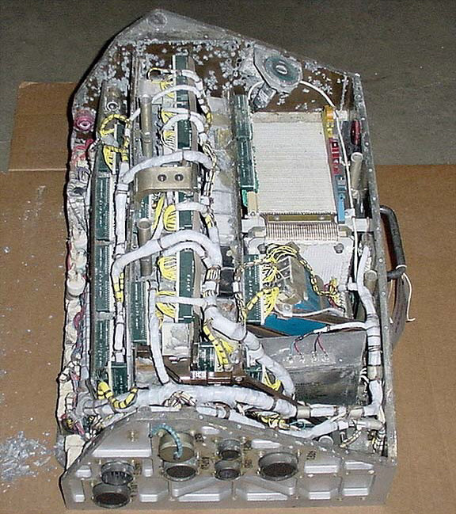
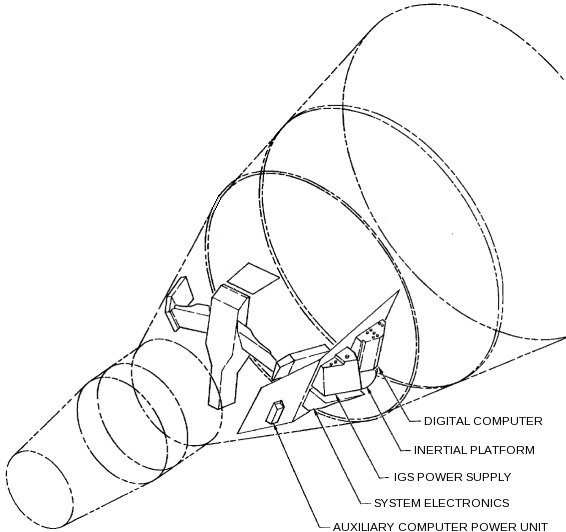
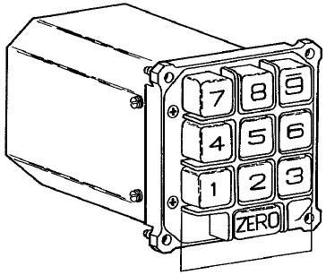
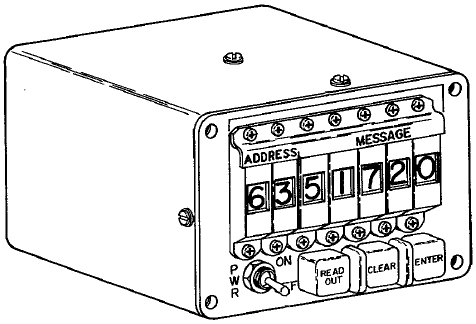
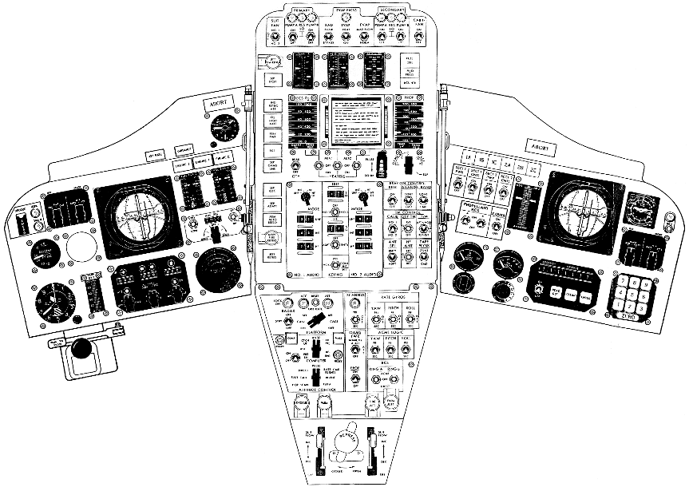
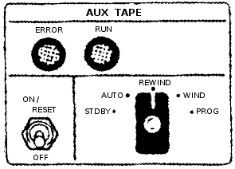
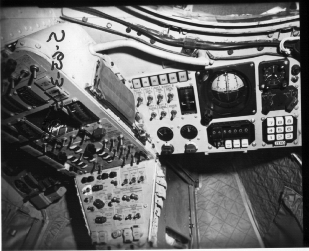
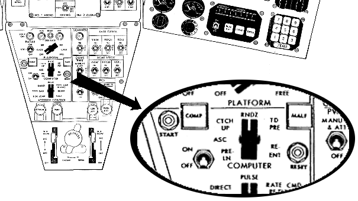
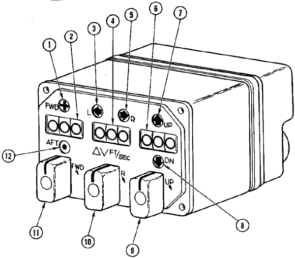
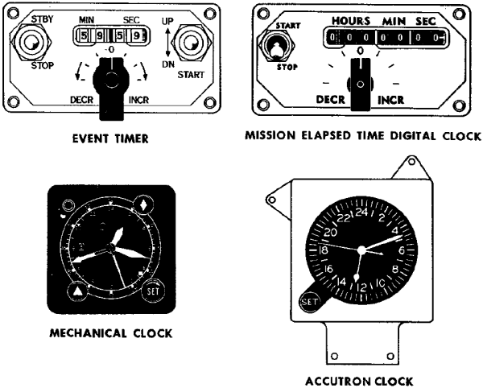

Contents
What is the
Gemini
Spacecraft Computer (OBC)?
The Gemini spacecraft computer
is, as the name implies, the onboard computer of the Gemini
spacecraft. The computer seems to have been referred to
variously as the "spacecraft computer", the "digital computer",
or the "On-Board Computer" (OBC). It was the Gemini
equivalent of Apollo's AGC, though with more limited capabilities
and functionality. Its basic use was in the post-launch
phases of missions (orbit phase, retrograde phase, re-entry
phase), because the Titan II rocket which carried the Gemini
spacecraft into orbit was guided by its own (separate) ACS-15
guidance computer, but there was provision also for switchover to
the Gemini computer for backup guidance if the need arose.
Interestingly, the OBC could be used for automatic attitude
control of the spacecraft, but not automatic velocity control;
rather, it performed necessary calculations for maneuvers such as
orbital insertion or re-entry, and the pilots then performed the
manual chores of actually adjusting the spacecraft velocity
appropriately.
The OBC was designed and manufactured by IBM's Federal Systems
Division, in Owego, New York, just as Apollo's Launch
Vehicle Digital Computer (LVDC) was.
The OBC and the LVDC are extraordinarily similar at the CPU
level.

The Gemini VIII OBC, with
cover removed
(Smithsonian National Air & Space Museum)
|

Location of the OBC in the
spacecraft
|
Peripheral
Devices
This section
contains a general overview of the OBC's peripheral devices, but
many of them are discussed in much greater detail in later
sections.
From a user standpoint, the most visible of the OBC's peripheral
device was the Manual Data Insertion Unit (MDIU)—the Gemini
equivalent of the Apollo DSKY—which
comprised the Modular Display Keyboard (MDK) and the Modular
Display Readout (MDR).

Modular Display Keyboard
(MDK)
|

Modular Display
Readout
|
These were on the Pilot's (as opposed to the Command Pilot's)
side of the control panel, at the lower right in the drawing
below. The small image below is from the familiarization
manual, but if you click on it you'll get a much bigger, much
more detailed drawing from the Gemini
5 Mission Report.

A basic inventory of the guidance sub-systems includes:
- Attitude Control and Maneuver Electronics (ACME), which
is the sub-system that directly controls the propulsion
system.
- Inertial Guidance System (IGS), including the Inertial
Measurement Unit (IMU) and the OBC itself.
- Horizon Sensors
- Time Reference System (TRS)
The diagram below shows a very simplified block diagram
of the guidance system, but if you click it you'll get a
(different) more-detailed block diagram.
The IMU is the usual gimballed stable platform with
accelerometers and angular resolvers as in Apollo, except for
a key difference that the Gemini IMU had four gimbals rather
than the three gimbals of Apollo. This means that it
was not subject to the phenomenon of "gimbal lock", and hence
the software used to adjust spacecraft alignment could be
simpler than with three gimbals. The value of the 4th
gimbal can be appreciated when considering incidents like the
mishap in Gemini VIII in which an uncontrolled roll
occurred. (If the IMU had had only three gimbals, my
understanding is that gimbal lock would have occured when the
roll angle was too great.) On the other hand, at that
point the spacecraft was under manual control anyway, and I'm
sure that the notion that the IMU would have to be realigned
later would have been the least of Neil Armstrong and Dave
Scott's worries.
Gemini
Documentation
Sadly,
documentation we've been able to collect for the OBC lags far
behind that of the AGC or even that of the Abort Guidance System
(AGS). What little survives that we have been able to
access can be found in our Document
Library. There's a lot of unique stuff there
contributed by original Gemini developers.
Of particular note are the portions of the Gemini Operations
Handbook, for spacecraft 7 and 10, and especially subsection
2.5.7 of those handbooks. These provide user instructions for
the flight-computer software, and in the case of spacecraft 10 are
particularly detailed. For example, in the case of spacecraft
10, there's a complete list, with explanations, scope, and format,
of all of the memory variables (addresses 0-162) accessible from the
MDIU/DCS.
Evolution of the
Flight
Software ... or, "Everybody Loves Math Flow 7" ... or, "What is
software, my man? What is software?"
Information
about the Gemini OBC software is hard to come by. Useful
information we don't
have includes any actual OBC software that's contemporary to the
Gemini project itself, and that's a lot not to know. But
the situation isn't all bad, partly because the development
method of the Gemini OBC software causes us to question what the
notion of having the original software even means. I'll
explain more about that shortly, but there's an important sense
in which we actually do have significant portions of the software
at our disposal.
But before turning our attention to such lofty matters, let's
begin with some of the more-mundane details. Firstly, as
far as naming is concerned, the flight software seems to have
been called simply the "operational program". On the
subject of versioning of the operational program, we have only
partial information, from the familiarization manual, from
James
Tomayko's
Computers in Spaceflight, Chapter 1, section 4, and
from
this short memo. (Where there's any discrepancy, I
personally believe in the memo.)
The operational programs were characterized in terms of something
called the "Math Flow". In brief, the Math Flow is the
complete design of the software, expressed in Gemini as a series
of very detailed flowcharts. The development of the Math
Flow eventualy went through 7 major versions, designated MF-1
through MF-7. But there were differing revisions for each
of the major versions as well.
The overall software design was partitioned into several
different areas of basic functionality. In math-flow MF-1 through
MF-6, these functional areas were integrated into a single
operational program. (Though for some missions, unneeded
functionality could be omitted. Thus, Catch-up & Rendezvous
were omitted in spacecraft GT-3, GT-4, and GT-7.) In MF-7,
the code was refactored into 6 different high-level "Program
Modules", which could be loaded into memory from the Auxiliary Tape Memory
(ATM) when needed during specific mission phases, though
Module I was in memory at all times and didn't need to be loaded
from the ATM. The modules were as follows:
Module
|
Basic
Functionality
|
MOD I
|
Executor
Pre-Launch
Diagnostics
Computational subroutines (SINCOS, SQROOT, etc.)
ATM-read
|
MOD II
|
Ascent (with abort
capability)
Catch-up (without radar)
Re-entry for ascent-abort
|
MOD III
|
Catch-up (with radar)
Rendezvous
|
MOD IV
|
Touchdown-predict
Re-entry
Re-entry initialization
|
MOD V
|
Simplified functions as backup for ATM failure:
Ascent (without abort capability)
Catch-up and Rendezvous (without self-test)
|
MOD VI
|
Orbit-predict
Orbit-navigation
Orbit-determination
|
The astronauts used the Computer Mode rotary switch on the
Pilots' Control and Display Panel to select
from amount the following mission phases to indirectly affect the
active functionality areas: Pre-launch, Ascent, Catch-up,
Rendezvous, or Re-entry.
All of these functionality areas are self-explanatory, except
"Executor". Executor is the interface that interrelates the
other software modules and allows them to interact with each
other, as well has implementing certain common functionality
among them.
As far as the relationship between this stuff and the missions is
concerned, the best info I have at present is as follows:
Spacecraft
|
Mission
Designation
|
Math Flow
version
|
Program
number,
revision
|
Comments
|
GT-1
|
Gemini 1
|
n/a
|
n/a
|
Unmanned mission.
Since Gemini I was apparently intended principally as a
structural test of the spacecraft, it may not have had a
computer onboard.
|
n/a
|
n/a
|
MF-1
|
-
|
|
n/a
|
n/a
|
MF-2
|
-
|
|
n/a
|
n/a
|
MF-3
|
6444540, B |
Flowcharts that we have! Seemingly, one minor
revision prior to the software flown in the Gemini 2
unmanned mission. You'll notice, though, that the
first manned missions (Gemini 3 and 4) still used MF-3,
though in a later minor revision. It's useful to
know that:
- Rendezvous begins on p. 1
- Gimbal Angle and CLOCK subroutines are on p. 8
- SINCOS and ARCTAN subroutines are on p. 9
- Re-entry begins on p. 10
- SHIFT, SQRT (also computes arcsin), and LOG
subroutines are on p. 15
- MDIU subroutine is on p. 16
- Ascent guidance begins on p. 17
- Fast-loop ascent guidance begins on p. 19
- Root sum subroutine begins on p. 22
- Executor, Accelerometer, DCS, and DAS are on p.
23
- MDIU scaling stuff starts on p. 24
- AGE is on p. 26
- Standby, TRS, and I/O subroutines are on p.
27
|
n/a
|
n/a
|
MF-3(?)
|
62-564-0020, B
(Ascent Guidance and
Fast Ascent Guidance only)
|
Flowcharts that we have! See pp. 2-3 of the linked
document. The document contains a lot of other
helpful stuff like detailed explanations of the variables,
some additional theory, and source code of a FORTRAN
implementation.
I'm not really clear where this goes in the development
chronology, merely that it is a few months later than the
corresponding elements from the Detailed Math Flow in the
preceding entry.
|
GT-2
|
Gemini 2
|
MF-3
|
6444541, C |
Unmanned
mission.
|
GT-3
|
Gemini III
|
MF-3
|
6444566, C |
First manned
mission.
|
GT-4
|
Gemini IV
|
MF-3
|
6444909, C
|
|
n/a
|
n/a
|
MF-4
|
-
|
Work stopped prior to
"sell off".
|
n/a
|
n/a
|
MF-5
|
-
|
Work stopped prior to
release or sell off.
|
GT-5
|
Gemini V
|
MF-6
|
6444871, B
|
|
GT-6
|
Gemini VI-A
|
MF-6
|
6444871, D
|
|
GT-7
|
Gemini VII
|
MF-6
|
6444871, D |
|
GT-8 (backup)
|
n/a
|
MF-6
|
6444871, E
|
|
GT-8
|
Gemini VIII
|
MF-7
|
MOD I:
6449856, C
MOD II: not used
MOD III: not used
MOD IV: 6449864, B
MOD V: 6449812, B
MOD VI: not used
|
The principal
difference between MF-6 and MF-7 was the reworking of the
integrated operational program into 6 individual Modules
(here referred to as MOD I through MOD VI) that were
treated as independent programs, loadable into main memory
at runtime from the new Auxiliary Tape Memory (ATM).
One consequence is that each of the 6 Modules in MF-7 now
had its own individual program number and
revision.
|
GT-9
|
Gemini IX-A
|
MF-7
|
MOD I: 6449856, C
MOD II: not used
MOD III: not used
MOD IV: 6449864, B
MOD V: 6449812, B
MOD VI: not used |
|
n/a
|
n/a
|
MF-7
|
MOD III: 6449883 |
Flowcharts that we have! Later than any Module III
flown prior to the ATM, and therefore presumably
algorithmically mature, but preceding (by some unknown
number of revisions) the first use of Module III as an
integrated program loaded from the ATM in Gemini X and
therefore presumably relatively immature in terms of its
implementation in OBC assembly language. But
remember, we don't have any of the original OBC assembly
language, and it's only the algorithmic correctness that
concerns us.
Incidentally, this scan derived from a microfilm retrieved
from a wastebasket prior to the project's move from the
Washington, D.C., area in mid-1966. Obviously, we're
always trying to find better sources of material. (If
you happen to have any wastebaskets from that era that are
still loaded with microfilm, be sure to let us know.) |
GT-10
|
Gemini X |
MF-7
|
MOD I:
6449856, C (?)
MOD II: 6449816, A
MOD III: 6449895
MOD IV: 6449864, B (?)
MOD V: 6449812, B (?)
MOD VI: 6450027
|
|
GT-11
|
Gemini XI
|
MF-7
|
?
|
|
GT-12
|
Gemini XII
|
MF-7
|
?
|
|
Finally, let's return to odd question of whether or not we're in
possession of any of the original flight software. This
question is related to the serious if somewhat
facetiously-phrased question asked in this title's heading,
namely: "What is software?" In the context of the
Virtual AGC project --- and I think in the minds of most
currently-active computer programmers (2011) --- the question
"What is software?" is very easily answered: If you have
the source code of the program (and some way of compiling or
assembling that code) or if you have the binary executable of the
program (and some way to execute it), then you have the
software. If you have all of the instructions for how to
compile/assemble it, so much the better. But the OBC
software developers had a somewhat different view of this
question, and their view is bound up in the method used to
develop the software.
The most important thing to understand about the
software-development process for the OBC software is that it was
very heavily dependent on design as opposed to coding. What
I mean by that is the following:
- Great attention was given to deriving the mathematics
needed for achieving the objectives, and great attention was
given as well to verifying the correctness of that
mathematics.
- Then (and only then), great attention was given to
developing the "Math Flow". To repeat what I said
earlier, the Math Flow was a series of a flowcharts specifying
the algorithms to be implemented in very great detail.
The flowcharts described the algorithms in such detail that the
programmer had very few options left open to him in actually
coding that software into a form that could be compiled or
assembled.
- Then (and only then), software was coded. But the
coding was almost entirely a slavish detail-by-detail
translation of the flowchart into computer source-code
form.
It was interesting (and at first frustrating) for me to
discuss the matter of existence of the software with OBC
developers, because from my point of view the software (source
code) seemingly no longer existed, while from the point of view
of the OBC developers the software did still exist to the extent
that the flowcharts still existed ... because to them the
software is the
flowchart and not the source code. The source code could
always be reproduced from the flowchart, albeit with great
effort, and not necessarily byte-for-byte identical to the
original. When viewed from this perspective, it makes
little difference how the flowchart is translated into computer
language—whether into FORTRAN as was done for simulation purposes
or into OBC assembly language for the mission computer—because
regardless, it's the same flowchart so it's the same program.
Now, in the preceding paragraph I probably exaggerated the OBC
developers' somewhat in order to make my point, but I think there
is nevertheless a lot of validity in the viewpoint that was
expressed: If we have the Math Flow charts, then we have
the software. You'll notice from the table above that we do
have some of the Math Flow charts, though the validity of what we
have could be debated.
I'll leave it as an exercise for the reader to decide whether or
not we actually have any of the software, or whether or not we're
rationalizing.
OBC Architecture and
Interfacing
References
The
principal known sources of information about the computer itself
are the "Guidance and Control" sections (Section VIII) of the
Project Gemini Familiarization
Manual,
Volume 1 and
Volume 2, and most of the information on this web-page was
extracted from those sources. If you find my redigesting of
the material too poor, you may want to read the Manual
instead. However, any simulation software, assemblers,
etc., will be based on my
understanding and hence on the
content of this web-page, so please bring any errors to my
attention.
Also, I should state that there's a lot of information on this
page that comes from personal communications with original OBC
developers, and can't be found in any other reference that's
going to be available to the reader ... or probably, to
anyone. While I present a general acknowledgements and
"homage" to the original OBC developers in general at the very
end of this web-page, let me mention here the OBC developers who
have been so directly helpful to me. In no particular
order:
- Gene Mertz
- Charlie Leist
- Alden Minnick
- Don O'Neill
General
Characteristics of the OBC
The OBC measured
18.9"(H)×14.5"(W)×12.75"(D), and weighed 58.98 pounds. OBC
power was supplied by the IGS Power Supply, which was itself
powered from the spacecraft's main +28VDC bus or (for very brief
main-power outages or brownouts) the Auxiliary Computer Power
Unit (ACPU). The OBC required various voltages (+27.2VDC,
+9.3VDC -27.2VDC, +20VDC, +28VDC, and 26VAC, but the existing
documentation is inconsistent on the exact voltages used), and
itself supplied the MDIU (+25VDC, -25VDC +8VDC) and these latter
three voltages were what was actually used internally by the OBC
itself.
The computing characteristics were:
- 39 bits per memory word. Each memory word comprised
three "syllables" (syllable 0, syllable 1, and syllable 2) of
13 bits each.
- 4096 words of memory, in a ferrite core array. All of
this RAM was writable—i.e., there was no read-only memory—but
the readout of the memory was non-destructive.
- The memory was logically divided into 16 "sectors" of 256
words each.
- At any given time only 2 sectors are actually accessable,
the current sector (selectable under program control) and the
"residual" sector (sector 17 octal).
- The third syllables of memory words were writable by the
OBC hardware, but this function was disabled after the
spacecraft left the hangar, so at that point the 3rd syllables
were effectively read-only. Consequently, data words
always needed to be placed into the first two syllables of
memory words. The addressing of data by CPU instructions
enforced this data alignment anyway.
- "Instruction words" were 13 bits each, and "data words"
were 26 bits each, so any given memory word could have had a
data word and/or several instruction words packed into
it. There were also provisions for "short" data words of
13 bits, but these short data words could be used only for
testing purposes by Aerospace
Ground
Equipment (AGE), and so were irrelevant for software.
- Integer arithmetic was 2's-complement.
- Instruction cycle time was 140 μs and all instructions
required a single cycle except for MLT and DIV.
Layout
of Memory Words
I should
make it clear that in this section I'm describing my perspective
on the organization of OBC memory, in terms of how the original
OBC programmers would have worked with it, in terms of how one
would work with it using the tools I've created for this site,
and in terms of what I think would be the thinking of "modern"
programmers at the time I'm writing these words (2011). I'm
not slavishly reproducing here the material on memory
orgainization from the most-complete documentation available to
us, namely the "Guidance and Control" sections (Section VIII) of
the Project Gemini
Familiarization Manual,
Volume 1 and
Volume 2, because that documentation seems to me to conflict
with what I"ve been told by actual OBC programmers. The
specific area of difficulty is bit-ordering within memory
words. You see, the memory was accessed by a kind of serial
interface, and the natural hardware view is in terms of the
time-order in which the bits are shifted in and out ... whereas
the natural software or mathematical view is in terms of which
bits are the most-significant or least-significant—or as normally
represented, which bits are on the "left" and which are on the
"right". So I'll adopt the latter perspective, but if you
wish to explore what the documentation says on the topic of
bit-ordering, feel free to do so.
In all cases, when I show you binary or octal representations of
OBC memory, it will use the notation common today, in which the
least-significant bits or octal digits are on the right and the
most-significant bits or octal digits are on the left.
As mentioned earlier, memory words are 39 bits, comprising three
13-bit "syllables". In most ways, the syllable is really
the natural memory unit, and not the word. Except in one
specific case, storing and retrieving 26-bit data, syllables
within a memory word are completely unrelated to (and independent
of) each other. So you're really best served by thinking of
memory as a set of syllables rather than a set of words.
Not all syllables are created equal. In the normal
operating mode of the OBC at mission time, the following rules
apply:
- All CPU instructions which fetch, store, or otherwise
operate on data stored in memory work only with 26-bit (2-syllable) data
words in which the less-significant syllable is stored in
syllable 0 of memory and the more-significant word is stored in
syllable 1 (in the same word) of memory.
- Only syllables 0 and 1 are cabable of being modified.
Syllable 2 is read-only.
- Therefore, as you can imagine, all data other than code is
allocated in syllables 0 and 1.
- Code is commonly stored in syllable 2 ... though since data
does not use all of syllables 0 and 1, some code will be stored
in syllables 0 and 1 as well.
(There's also a less-common operating mode called "half-word
mode" which has somewhat different rules, but this mode has
limited usage so we'll return to it later rather than diverting
the main discussion.)
Now let's look at some common syllable or double-syllable
formats.
Every CPU instruction consists of a single syllable, in the
following bit layout:
PPPPAAAAAAAAA
where PPPP
is a
4-bit code identifying the specific CPU instruction (the "op
code") and AAAAAAAAA is
a 9-bit code (3 octal digits) identifying (in a way that varies
by instruction type) the operand for the instruction.
Conventionally, OBC programmers name the individual bits like
so:
- OP4
is the
most-significant bit of PPPP and
OP1
is the
least-significant.
- A9
is the
most-significant bit of AAAAAAAAA
and A1
is the
least-significant.
In most instruction types, A1-A8 select
a particular memory word. Since there are only 8 bits, only
256 different words are accessible. Recall, moreover, that
memory consists of 16 sectors of 256 words each of 3 syllables
each. So the instruction is able to select a specific word
address, but the sector containing the word and the syllable
within the word can't be selected ... those have to be known by
other means, which we'll discuss later; for now, just realize
that at any time there's some "current sector" and "current
syllable", and that whatever the CPU is doing operates within
that current selection. When A1-A8 is
interpreted in this way, A9 can be
used to override the current sector and instead to do a one-time
selection of sector 0, which is referred to as the "residual
sector". A9=0 means
to use the current sector and A9=1 means
to use the residual sector. But there's no way to select a
different sector or a different syllable on an
individual-instruction basis.
Several instructions use a scheme in which the field consisting
of bits A1-A3
is
given the name "X" and A4-A6 are
given the name "Y", thus giving the instruction two independent
parameters. In those cases, A7 and
A8
are
unused, and A9 may or
may supply additional functionality
For normal 26-bit data, recall that a standard 2's-complement
format is used. OBC programmers conventionally refer to the
sign bit (i.e., the most-significant bit if interpreting the data
as an unsigned integer) as S, to the
most-significant non-sign bit as M25, and to
the least-significant bit as M1.
Therefore, in a word containing such data, syllable 1 will
contain S
and
M25-M14;
syllable 0 will contain M13-M1.
Numerical data can be interpreted in two different ways,
depending on the interpretation of the software. Obviously,
the data could be interpreted as a simple 2's complement
integer. It can also be interpreted as a fractional value
with absolute value less than 1.0. In the latter
interpretation, there is some scaling factor needed to relate the
actual value of the number to the binary value that's stored in
memory. The OBC and its software have no method for dealing with
scaling factors, and it was up to the programmer to understand
which interpretation was used, as well as to explicitly scale
values during computations to avoid overflow and loss of
significant bits.
An important variation in which 26 bits of data aren't numerical
in nature is the so-called "HOP constant". A "HOP constant"
is used by a dedicated CPU instruction (HOP)
to change things such as the currently-selected memory sector and
syllable by loading a hidden CPU register that can't be accessed
by other means. The layout of a HOP constant is as follows:
xxxxxxxxHxSSxPPPPAAAAAAAAA
In this scheme:
- Bits AAAAAAAAA
are given names A9-A1 and
are interpreted as described earlier, in that they allow
selection of a word address (0-255) and provide an override for
current-sector vs. residual sector. After the
HOP
instruction executes, this setting persists within the CPU's
hidden HOP register only for the current instruction and is
then incremented to the next sequential word (or to some other
word if a branch occurs).
- Bits SS,
respectively given the names SYB and
SYA,
specify
the current syllable: 00 for syllable 0, 01 for
syllable 1, and 10 for syllable 2. After the HOP
instruction executes, this setting persists until another
HOP
instruction changes it.
- Bits PPPP,
respectively given the names S4-S1,
specify the current sector. After the HOP
instruction executes, this setting persists until another
HOP
instruction changes it, though as we've seen it can be
overridden to instead use sector 0 on an
instruction-by-instruction basis using the A9
feature
possessed by some of the CPU instructions.
- H
selects
between "normal" mode (H=0) and
"half-word" mode (H=1), and
this mode persists until another HOP
instruction changes it. "Normal" mode is what I've been
describing to you up to this point. In half-word mode
(HWM), the data comes from syllable 2 rather than
syllables 0,1, and therefore is only 13 bits rather than
26. When the CPU fetches such data from memory, it fills
the least-significant 13 bits of the CPU's accumulator
register, while the most-significant 13-bits are all 0.
An interesting consequence of being in the half-word mode is
that any HOP
instruction will return to normal mode (since H
is among
the higher 13 bits of a HOP constant) and the current syllable
will always become 0 (since SYB and
SYA
are
also among the 13 more-signficant bits). Moreover, since
the the OBC's ability to write to syllable 2 is disabled after
the spacecraft has left the hangar, no STO
or
SPQ
have
any effect in half-word mode.
- At power-up, the behavior differed between the early Gemini
missions without ATM (Auxiliary Tape Memory), and the later
ones with ATM:
- Without ATM, it is as if a HOP constant is loaded that
puts the unit in normal mode (i.e., not half-word mode) at
syllable 0 of word 0 in sector 0.
- With ATM, it is as if a HOP constant is loaded that puts
the unit into half-word mode at syllable 2 of word 0 in
sector 0.
You may wonder what half-word mode is good for? Well,
originally, it seems to have been intended for testing
purposes. Later, when the flight-program outstripped the
size of available memory, it became necessary to add the ATM and
use it to overlay programs at runtime. In that case, I
guess, it's useful to be able to run a program entirely within
syllable 2 (which is read-only) without fear that the ATM can
overlay it. But you know, I'm not really sure.
Instruction
Sequencing
You may
na\EFvely suppose (I did!) if you did not read the preceding
section in great detail, that the everyday usage of the words
"word" and "syllable" applies similarly in stepping through the
OBC (or LVDC) instructions. In proceeding through a
sentence of natural language like English, you use up all of the
syllables in a word before proceeding to the next word. So
you might suppose that OBC instructions would sequence in a
manner something like the following: word N
syllable 0, word N
syllable 1, word N
syllable 2, word N+1
syllable 0, word N+1
syllable 1, and so on. In fact, this is not the case at
all, and (as you may infer from the instruction definitions in
the following section) would have caused insuperable
difficulties. So get the na\EFve interpretation right out
of your head!
Instead, the instruction
sequencing was like this:
word 0 syllable N
word 1 syllable N
word 2 syllable N
etc.
so that the syllable number never changed automatically as you
progressed through the program. But you could always change
the syllable manually by executing an instruction
(HOP)
and
a HOP constant specifically designed to change the syllable
number.
In retrospect, from an outsiders point of view, it would perhaps
have been less confusing in terms of instruction sequencing if
the OBC hardware designers had used the word "paragraph" rather
than "syllable". Alas! it's a bit late to worry about that
now. The OBC programmers I've consulted seem to think that
this is a perfectly natural scheme, and don't seem to have
experienced any confusion over the concept of
"syllables".
CPU
Instructions
If you're interested in Gemini, you may not be
very interested in Apollo's LVDC
instruction set. But
there are so many similarities between the two that I'll probably
not be able to resist the temptation to point out some of the
differences as I proceed. A difference not pointed out in
the table below is that the LVDC instructions MPH,
XOR,
and
CDS,
EXM
are not
present in the OBC.
Note that in what follows, a name representing a location of
memory holding an instruction is called a "left-hand symbol" in
the parliance of the Gemini OBC programmers, and I will continue
to call it that (or LHS for short) rather than adopting
more-current terminology.
Finally, when I talk below about the assembly-language syntax of
the instructions, I'm referring to the syntax supported by my own
yaASM assembler presented
as a download on this website. This syntax is very similar
to the original OBC assembler's syntax but we can't be sure it's
identical because no documentation for the original assembler has
been located up to this point in time.
Mnemonic
|
Opcode
(OP1-OP4)
in octal
|
Timing
(140 μs
cycles)
|
Description of the instruction
|
HOP
|
00
|
1
|
This instruction combines an unconditional jump
instruction with various other configuration options,
such as memory-sector selection. The way it works
is that the address A1-A9 points to a memory word that
contains a "HOP constant", and the HOP
instruction transfers that HOP constant into the HOP
register. Recall that A1-A8 select the offset
within a 256-word sector, and A9 is the "residual bit"
that selects between the current sector and the "residual
sector". There is no provision for a partial HOP
constant, and the full HOP constant needs to be given
every time a HOP
instruction is used. See also TRA.
However ... the fact that HOP
operates on HOP constants rather than on the left-hand
symbols that are the labels for locations in the code as
actually understood by the programmers, is not very
convenient. The simple act of HOPping to a location
would have to look something like this:
HTARGET
HOPC TARGET # Set
up a HOP constant for the target location.
...
HOP HTARGET # HOP
to the target location
...
TARGET
...
#
Location we want to HOP to.
This is pretty cumbersome. The assembler therefore
provides a special feature in that if the operand of a
HOP is a left-hand symbol for a code location, which
would otherwise be illegal, the assembler silently
allocates and initializes a HOP constant of the same
name, but enclosed in parentheses, and then it pretends
that the operand of the HOP was really the newly-created
HOP constant. Therefore, in assembly language, the
following becomes legal even though seemingly illegal in
machine code:
HOP TARGET #
HOP to the target location
...
TARGET
...
#
Location we want to HOP to.
But what the assembler really outputs in this case is the
same as in the first example (with the HOP constant named
"(TARGET)"
instead of "HTARGET").
The assembler performs a similar service for the
CLA
and STO
instructions (see below). There are some drawbacks to
this special feature as well, namely:
- Any left-hand symbols used as targets of HOPs in
this way must be 6 characters or less rather than
8.
- The assembler always creates the implicit HOP
constants in the residual sector 17, syllable 0.
- Since there are no explicit allocations for the
implicit HOP constants, it's easy for the programmer to
overlook that they're being created, and therefore to
be less aware of the rate at which memory is being used
up.
- There's no provision for half-word mode.
Fortunately, there's no drawback here that can't be
worked around by explicitly defining any troublesome HOP
constants needed, as in the first example.
|
DIV
|
01
|
1
(results
available
after 6)
|
This is the division instruction. The contents of
the accumulator are divided by the operand pointed to by
the address A1-A9 embedded within the instruction to
produce a 24-bit quotient. Recall that A1-A8 select
the offset within a 256-word sector, and A9 is the
"residual bit" that selects between the current sector
and the "residual sector". The quotient is
available via the SPQ
instruction from the 5th instruction following the
DIV.
In
other words, 4 other instructions not involving
multiplication or division can be performed in the
interval between DIV
and SPQ.
To illustrate the assembly-language syntax, let's divide
the integer 56 by 3 and store the result in a
variable:
RESULT
#
Allocate variable for output.
K56
DEC
56 # Provide
dividend as a constant.
K3
DEC
3 #
Provide divisor as a constant.
CLA
K56 # Load divisor
into accumulator.
DIV
K3 # Start
the division.
NOP
#
The result won't be available
NOP
#
for a while, so kill some time.
NOP
NOP
SPQ
#
Fetch quotient into accumulator.
STO RESULT #
Save it!
|
PRO
|
02
|
1
|
Inputs or outputs an i/o "signal" into or from the
accumulator. (In the AGC these are called
"channels". In current terminology, we'd probably
usually refer to them as "ports".) Whether or not
an input or an output is performed depends on the
particular signal chosen. The X (A1-A3) and Y
(A4-A6) operand fields are used for signal
selection. A9 is used as well. For an output
operation, it determines if the accumulator should be
cleared after the output (A9=1) or preserved
(A9=0). For an input operation, it determines
if the data should be loaded into the accumulator (A9=1)
or logically OR'd with the accumulator (A9=0). A
table of the i/o signals vs. addresses is given in the
following
section. (The PRO
instruction is essentially equivalent to the LVDC PIO
instruction, but the selection of i/o signals is
different.)
The documentation does not explain this, but I think that
when the PRO
instruction is accessing a single-bit signal, only the
accumulator's sign bit is used as the output or the
input. (I'm not sure what the effect on other
bit-positions should be on input.)
There are several allowable assembly-language syntaxes
for this instruction:
PRO
YX # If
A9=0
PRO
0YX #
Same as
"PRO YX"
PRO
4YX
# If
A9=1
(Or, you could just look at it as having a literal
octal constant as operand, and that constant was placed
directly into the bits A9-A1.) For example, to read
MDIU keystroke data, X=3
and Y=4, so
PRO
43
|
RSU
|
03
|
1
|
Same as SUB
(see below), except that the order of the operands in the
subtraction is reversed.
Assembly-language example to compute RESULT=3-56:
RESULT
#
Allocate variable for output.
ARG1
DEC 56
ARG2 DEC
3
CLA ARG1
RSU
ARG2
STO RESULT
|
ADD
|
04
|
1
|
Adds the contents of the accumulator with the contents of
the address embedded within the instruction and places
the result in the accumulator. Recall that A1-A8
select the offset within a 256-word sector, and A9 is the
"residual bit" that selects between the current sector
and the "residual sector".
Assembly-language example to compute RESULT=56+3:
RESULT
#
Allocate variable for output.
ARG1
DEC 56
ARG2 DEC
3
CLA ARG1
ADD
ARG2
STO
RESULT
|
SUB
|
05
|
1
|
Subtracts the contents of a word pointed to by the
address embedded within the instruction from the
accumulator, and puts the result back into the
accumulator. Recall that A1-A8 select the offset
within a 256-word sector, and A9 is the "residual bit"
that selects between the current sector and the "residual
sector". See also RSU.
Assembly-language example to compute RESULT=56-3:
RESULT
#
Allocate variable for output.
ARG1
DEC 56
ARG2 DEC
3
CLA ARG1
SUB
ARG2
STO RESULT
|
CLA
|
06
|
1
|
Store a value to the accumulator, from the memory word at
the address embedded within the instruction.
Recall that A1-A8 select the offset within a 256-word
sector, and A9 is the "residual bit" that selects between
the current sector and the "residual sector".
Assembly-langauge example to load the accumulator with
decimal 56:
K56
DEC
56
CLA
K56
Note that as with the HOP
instruction, the assembler allows seemingly meaningless
usages like "CLA
LHS", where LHS
is the left-hand symbol of a code location rather that
the name of a variable or constant. What the
assembler does in this case is automatically, silently to
create a HOP constant in memory called "(LHS)",
and
then to subsitute the "CLA
(LHS)" for the original instruction. See the
notes accompanying the HOP
instruction for full details.
|
AND
|
07
|
1
|
Logically ANDs the contents of the accumulator with the
contents of the address embedded within the instruction
and places the result in the accumulator. Recall
that A1-A8 select the offset within a 256-word sector,
and A9 is the "residual bit" that selects between the
current sector and the "residual sector".
Assembly-language example to compute RESULT=037&052
(i.e.,
to logically AND together octal 37 and octal
52):
RESULT
#
Allocate variable for output.
ARG1 OCT
37
ARG2 OCT 52
CLA ARG1
SUB
ARG2
STO RESULT
|
MPY
|
10
|
1
(results
available after 3)
|
This is a
multiplication instruction. It multiplies two 24-bit
numbers to produce a 26-bit product. The accumulator
provides the address of one operand, and the address
embedded in the instruction points to the other
operand. Recall that A1-A8 select the offset within a
256-word sector, and A9 is the "residual bit" that selects
between the current sector and the "residual sector".
In both cases, the most-significant 24-bits of the operands
are used, and the least-significant 2 bits of the operand
are ignored. The result is available via the
SPQ
instruction on the 2nd instruction following MPY.
Any
other instruction not involving multiplication or
division can be performed between the MPY
and the SPQ.
To illustrate the assembly-language syntax, let's multiply
the integer 56 by 3 and store the result in a variable:
RESULT
#
Allocate variable for output.
K56
DEC 56
K3
DEC 3
CLA K56
MUL
K3 # Start the
multiplication.
NOP
#
The result won't be available
NOP
#
for a while, so kill some time.
SPQ
#
Fetch product into accumulator.
STO RESULT #
Save
it!
|
TRA
|
11
|
1
|
This is an unconditional jump instruction, which branches
to the address embedded in the instruction. Bits
A1-A9 of the embedded address represent the new offset
within either the currently-selected sector or the
residual sector. Note that the syllable remains the
same, so if (for example) the TRA is itself in syllable 1
of the current program counter, then the next instruction
executed will be at syllable 1 in the new program
counter. (This differs from the behavior of the
corresponding LVDC
instruction, in
that the LVDC instruction allows selection of the target
syllable via A9, but does not allow the new program
counter to be in the residual sector.)
See also the description of shorthands
for
various instructions.
Assembly-language examples:
# Branch
from location START to location FINISH.
START TRA
FINISH
...
FINISH
...
# Branch from location START2 to FINISH2, but use
# relative addressing rather than the left-hand
# symbol FINISH2. The NOP instructions below
# could be anything --- the point is simply that
# FINISH2 is 3 words in memory after START2.
START2 TRA *+3
NOP
NOP
FINISH2 ...
The operand for TRA
is either an existing left-hand symbol for an instruction
(rather than for a variable or constant), or else an
expression of the form "*+N"
or "*-N", where N is any number from 1
to
7.
|
SHF
|
12
|
|
Performs a logical shift operation on the
accumulator. For this instruction, only bits A1-6
are actually used, as follows:
X
(A1-3)
|
Y
(A4-6)
|
Description of operation
|
1
|
2
|
Shift "right" one
position
|
0
|
2
|
Shift "right" two
positions |
X
|
3
|
Shift "left" one
position |
X
|
4
|
Shift "left" two
positions |
(Other)
|
Clears the
accumulator
|
But what do "left" and "right" mean? Fortunately,
"left" implies multiplication by powers of two, and
"right" division by powers of two, just as modern
programmers are accustomed to.
For the left-shifts, 0 is shifted into the
least-significant bit at the right. For the
right-shifts, the sign-bit is duplicated into the
most-significant bit at the left.
For illegal X,Y combinations, the accumulator is
zeroed.
Note that this instruction is similar to the
corresponding LVDC
instruction, but
differs in details.
See also the description of shorthands
for
various instructions.
There assembly-language syntax for this instruction
is:
SHF
YX
(Or, you could just look at it as having a literal
octal constant as operand, and that constant was placed
directly into the bits A6-A1.) For example, to
shift right one position, X=1
and Y=2, so
SHF
21
|
TMI
|
13
|
1
|
This is a conditional jump instruction, which branches to
the address embedded in the instruction if the
accumulator is less than zero, but simply continues to
the next instruction in sequence if the accumulator
greater than or equal to zero. Bits A1-A9 of the
embedded address represent the new offset within the
currently selected 256-word instruction sector or the
residual sector. See also TNZ.
(This differs from the behavior of the corresponding
LVDC
instruction, in that the LVDC instruction allows
selection of the target syllable via A9, but does not
allow the new program counter to be in the residual
sector.)
Assembly-language examples:
# Branch
from location START to location FINISH
# because VALUE is negative:
VALUE DEC
-129
START TMI
FINISH
...
#
Never gets here!
FINISH
...
#
But does get to here!
# Don't branch from START2 to FINISH2, because
# VALUE2 is not negative:
VALUE2 DEC 127
START2 TMI
FINISH2
...
#
Comes to here!
TRA BAILOUT
FINISH2
...
#
Never comes to here!
BAILOUT ...
The operand for TMI
is either an existing left-hand symbol for an instruction
(rather than for a variable or constant), or else an
expression of the form "*+N"
or "*-N", where N is any number from 1
to
7. The usage of the latter relative-addressing
forms isn't illustrated in the code example for
TMI,
but you can look at the code example for TRA
instead; it works exactly the same for TMI.
|
STO
|
14
|
1
|
Stores the contents of the accumulator in the word
indicated by the address embedded within the
instruction. Recall that A1-A8 select the offset
within a 256-word sector, and A9 is the "residual bit"
that selects between the current sector and the "residual
sector". The accumulator retains its
value.
Assembly-language example:
RESULT
#
Allocate a variable
STO
RESULT # Store
accumulator value in the variable.
Note that as with the HOP
instruction, the assembler allows seemingly meaningless
usages like "STO
LHS", where LHS
is the left-hand symbol of a code location rather that
the name of a variable or constant. What the
assembler does in this case is automatically, silently to
create a HOP constant in memory called "(LHS)",
and
then to subsitute the "STO
(LHS)" for the original instruction. See the
notes accompanying the HOP
instruction for full details.
|
SPQ
|
15
|
1
|
Store a product or
quotient (computed with MPY or
DIV)
into the word indicated by the address embedded within the
instruction. Recall that A1-A8 select the offset
within a 256-word sector, and A9 is the "residual bit" that
selects between the current sector and the "residual
sector". The accumulator retains its
value. (This instruction is somewhat similar to the
LVDC instruction
CLA
0775, though quite different in detail.)
For assembly-language examples, see MPY
or
DIV
above.
|
CLD
|
16
|
1
|
A discrete input (i.e., a single bit) selected by the
operand address is read into the accumulator. The
entire accumulator is overwritten so that every bit
position has the value of the discrete input bit, and
consequently will be either 000000000 or else 377777777
octal. A test of either TMI
or TNZ
thereafter can thus branch on the basis of the bit
value.. A table of the
allowed discretes follows later. (This
instruction does not exist in the LVDC.)
See also the description of shorthands
for
various instructions.
There assembly-language syntax for this instruction
is:
CLD
YX
(Or, you could just look at it as having a literal
octal constant as operand, and that constant was placed
directly into the bits A6-A1.) For example, to read
the MDIU data-ready bit, X=1
and Y=0, so
CLD
01
|
|
TNZ |
17
|
1
|
This is a conditional jump instruction, which branches to
the address embedded in the instruction if the
accumulator is not zero, but simply continues to the next
instruction in sequence if the accumulator is zero.
Bits A1-A8 of the embedded address represent the new word
address within the sector, while bit A9 selects between
the current sector vs. the residual sector. (In the
LVDC, A9 instead selects the syllable within the current
sector, which is possible since the LVDC has only 2
syllables.) See also TMI.
Assembly-language examples:
# Example
1: Branch to location IS129 if accumulator is
# equal to 129 and to ISNOT129 if accumulator is
not
# equal to 129:
K129 DEC
129
SUB K129
TNZ
ISNOT129
TRA IS129
...
IS129 ...
...
ISNOT129 ...
# Example 2: A simple loop with 10 iterations:
LOOPCTR
#
Variable for counting loop iterations.
K1
DEC 1
K10
DEC 10
CLA
K10 # Setup for the
loop.
STO LOOPCTR
LOOP
...
#
Do stuff
CLA LOOPCTR #
Decrement and test loop counter
SUB K1
TNZ LOOP
...
#
Done!
The operand for TNZ
is either an existing left-hand symbol for an instruction
(rather than for a variable or constant), or else an
expression of the form "*+N"
or "*-N", where N is any number from 1
to
7. The usage of the latter relative-addressing
forms isn't illustrated in the code example for
TNZ,
but you can look at the code example for TRA
instead; it works exactly the same for TNZ.
|
I/O Signals (For PRO
Instruction)
Note that in assembly language, in the
operand for a PRO
instruction, the Y operand field would proceed the X operand
field. So, for example, if X=3 and Y=4, the instruction
would be PRO43.
That's
the opposite of present ordering of the columns in the
table below and could be confusing, for which I apologize, but
I'm too lazy to completely rewrite the table.
Operand
|
Input /
Output
|
Signal
|
Comment
|
X
(A1-A3)
|
Y
(A4-A6)
|
0
|
0
|
In
|
Digital Command System shift pulse gate
|
Causes a 24-bit word
buffered in the Digital Command
System (DCS) to be read into bits M1-M24 of the
accumulator. Or, reads data from the Rendezvous Radar (if any).
|
0
|
1
|
Out
|
Data
Transmission System control gate
|
Used to output a data
word to the Instrumentation System
(IS) for digital downlink.
|
0
|
2
|
In/Out
|
Time
Reference System data and timing pulses
|
The action of this
signal seems pretty complex. Please read the section
on the Time Reference
System (TRS) for my conclusions as to what it's
actually supposed to do.
|
0
|
3
|
Out
|
Digit
magnitude weight 1
|
Used in conjunction with "Digit magnitude weight 2",
"Digit magnitude weight 4", and "Digit magnitude weight
8" to write a particular digit to an MDR position
previously
selected using the "Digit select weight X" outputs. The
weights derive from a BCD value of the digit whose
display is desired.
I haven't seen any explanation of how to clear a digit so
that it's blank ... perhaps there was no such feature,
though it seems to me that it would make data-entry very
confusing if so. There are a number of ways this
might have been done. Until I understand it better,
the yaPanel MDIU
emulator handles this as follows:
- Using any combination of magnitudes that doesn't
form a BCD (i.e., something in the range 0-9) will
clear the selected digit to be blank.
- Pressing the MDR's CLEAR button will make all of
the digits blank.
|
0
|
4
|
Out
|
Reset
data ready, enter, and readout
|
When zeroed, signals
the MDIU to reset
its internal buffer so that a numerical keystroke
subsequently be collected. It is unclear if this
needs to be returned to a non-zero state later. The
CLD
inputs associated with the ENTER and READ OUT keys also are
cleared as a result.
|
0
|
5
|
Out
|
Digit
select weight 1
|
Used in conjunction
with "Digit select weight 2" and "Digit select weight 4" to
select the next digit position to which a display value
will be output to the MDIU.
It is not
really explained how these work, but I think that they are
used to form an index from 0-7 in the obvious way, and that
the leftmost address digit is 0, the 2nd address digit is
1, the leftmost message digit is 2, and so on. |
0
|
6
|
Out
|
Memory strobe
|
I believe that this
signal is used only
in conjunction with the
AGE for
testing purposes. When the accumulator is negative,
it seems to enable a hardware mode called "marginal early"
may help in determining how robust the memory access is
with respect to marginal timing. When the accumulator
is positive or zero, it disables this diagnostic
feature.
|
1
|
0
|
Out
|
Computer ready
|
Signal to the Digital Command System (DCS) that the
OBC
wishes to read a buffered uplinked data word. Also
used to tell the Rendezvous
Radar, if any, that radar data is required. In
the latter case, a 20 ms. delay must occur afterward before
polling the radar-ready discrete input (CLD00).
|
1
|
1
|
Out
|
Drive
counters to zero
|
For setting a delta-V
display on the IVI to zero. First
do PRO11
with the accumulator negative, then (see "Select X
counter") select the X, Y, or Z axis, then do PRO11
with the accumulator positive or zero to return to the
normal state. CLD31,
CLD25,
and CLD26
can be subsequently used for feedback that the displays are
actually at zero.
|
1
|
2
|
Out
|
Enter
|
When inactive, the
Time Reference
System (TRS) is capable of receiving timing data (like
TR or
TX) from the ODC. When
active, the ODC can receive timing data (like ET or
TR) from the TRS. |
1
|
3
|
Out
|
Digit
magnitude weight 2
|
See Digit magnitude
weight 1
|
1
|
4
|
Out
|
Display device drive
|
The "display device drive", as far as I can see, is
what's used to turn the physical wheel on which the
MDIU
display-digits are inscribed to the proper position for
display. In other words when the drive is off
(i.e., PRO41 output a zero) the last-selected digit
continues to be displayed, while when the drive is on
(PRO41 output non-zero) the display wheel will be turned
if necessary. Therefore, the drive is normally off,
but is turned on briefly when a digit is being
changed. The full procedure is as follows:
- Use the digit-select weights to choose the
display-position which is supposed to be changed.
- Turn on the display device drive.
- Use the digit-magnitude weights to determine what
digit is driven into the selected display
position.
- Wait 0.5 seconds.
- Turn off the display device drive.
|
1
|
5
|
Out
|
Digit
select weight 2
|
See Digit select weight
1
|
1
|
6
|
|
Autopilot scale factor
|
|
2
|
0
|
Out
|
Pitch
resolution
|
Controls the range
switch for Pitch Error (or down range error) output.
If the sign bit is positive, then there is a 6-to-1
attenuation applied; if the sign bit is negative, there is
no attenuation.
|
2
|
1
|
Out
|
Select X counter
|
Used along with "Select Y counter" to select one of the
IVI's delta-V displays to receive
additional commands, as follows:
- X-axis: PRO12
with accumulator negative, PRO13
with accumulator positive or zero.
- Y-axis: PRO12
with accumulator positive or zero, PRO13
with accumulator negative.
- Z-axis: PRO12
with accumulator negative, PRO13
with accumulator negative.
|
2
|
2
|
Out
|
Aerospace Ground Equipment data link
|
For outputting a single
data bit to the dedicated AGE data
link.
|
2
|
3
|
Out
|
Digit
magnitude weight 4
|
See Digit magnitude
weight 1 |
2
|
5
|
Out
|
Digit
select weight 4
|
See Digit select weight
1
|
2
|
6
|
In
|
Reset
start computation
|
From the PCDP's
RESET switch.
|
3
|
0
|
Out
|
Yaw
resolution
|
Controls the range
switch for Yaw Error (or cross-range error) output.
If the sign bit is positive, then there is a 6-to-1
attenuation applied; if the sign bit is negative, there is
no attenuation. |
3
|
1
|
Out
|
Select Y counter
|
See "Select X
counter".
|
3
|
2
|
Out
|
Aerospace Ground Equipment data clock
|
Provides a data clock,
one pulse at a time, for reading data on the dedicated
AGE data
link.
|
3
|
3
|
Out
|
Digit
magnitude weight 8
|
See Digit magnitude
weight 1
|
3
|
4
|
In
|
Read
Manual Data Insertion Unit insert data
|
Reads a keystroke that
has been buffered in the MDIU. This
operation
should be done only in response to a separate discrete
"Data ready" input via CLD.
The BCD value of the digit is stored into bits M1-M4 of the
accumulator. A PRO40
should be performed afterward to clear the MDIU buffer and
allow the next keystroke to be collected, and additional
PRO
instructions should be used to display the digit on the
MDIU.
|
3
|
6
|
Out
|
Reset
radar ready
|
Sent to the Rendezvous Radar, if any, to
reset
its discrete input buffer.
|
4
|
0
|
Out
|
Roll
resolution
|
Controls the range
switch for Roll Error output. If the sign bit is
positive, then there is a 6-to-1 attenuation applied; if
the sign bit is negative, there is no attenuation. |
4
|
1
|
Out
|
Elapsed time control and Time Reference System control
reset / ATM wind-rewind reset
|
Signal to the Time Reference System
(TRS) that the data about to be fetched from the TRS with
PRO20
commands is the elapsed time (ET). This output should
persist for 9-15 ms. before being returned to the normal
state. It also apparently acts to reset the TRS
control circuitry.
(Units with ATM
only.) It has additional functionality for the
Auxiliary Tape
Memory (ATM), in that it commands the ATM to stop
winding or rewinding. I believe that it also turns
off the ATM ERROR lamp. (I don't know how to select
between the TRS/ATM functions, or if it always performs
both simultaneously.)
|
4
|
3
|
Out
|
Computer malfunction
|
To the PCDP's
MALF light.
|
4
|
4
|
Out
|
ATM
verify/repro command
|
Send a command to the
Auxiliary Tape
Memory (ATM) to begin data output. I assume that
the accumulator is negative to begin the output and zero or
positive to end it.
|
4
|
6
|
TBD
|
Second stage engine cutoff
|
TBD
|
5
|
0
|
Out
|
Computer running
|
To the PCDP's
COMP light.
|
5
|
1
|
In?/Out
|
Time
to start re-entry calculations control / ATM wind
command
|
The use for "time to
start re-entry calculations" is TBD.
(Units with ATM
only.) Initiates winding of the ATM.
I
assume that the value in the accumulator should be
negative, however, I don't think that outputting a positive
or zero value stops the winding. Instead, use
PRO14. (I
don't know how to select between the timing and ATM
functions, or if it always performs both
simultaneously.) |
5
|
2
|
Out
|
Time
to reset control / ATM rewind command
|
Signal to the Time Reference System
(TRS) that transfer of time-to-equipment-reset
(TX) data is desired. This
output should persist for 9-15 ms. before being returned to
the normal state.
(Units with ATM
only.) Initiates rewinding of the ATM.
I
assume that the value in the accumulator should be
negative, however, I don't think that outputting a positive
or zero value stops the rewinding. Instead, use
PRO14.
(I
don't know how to select between the TRS/ATM functions, or
if it always performs both simultaneously.) |
5
|
3
|
Out
|
Write
output processor
|
For incrementally
adjusting the delta-V displays of the IVI.
First, the X, Y, or Z display is
selected (see "Select X counter" above). No more than
1 ms. later, PRO35
is used to begin the update. The value in the
accumulator comprises the sign bit and M1-M12, so the
maximum change is -4096 to +4095. Since the displays
are actually -999 to +999, in theory the adjustment range
is more than full. In practice, only very small
adjustments would be made. My understanding of what
the hardware actually does is to increment or decrement the
displays by 1 every 21.5 ms., and that it will not be ready
to process another delta-V until the count has reached
zero. For example, trying to change the display by 25
would take about half a second, and no other outputs to the
IVI should take place in that interval. The "Velocity
error count not zero" discrete (CLD22)
can be polled to determine when the increment/decrement
pulses have all been sent to the display and the counter
has reached zero. |
5
|
4
|
In
|
Read
delta velocity
|
This port is used to read the change in velocity from the
platform electronics, and to zero the reference velocity
for the next readings.
A single PRO45
instruction reads the ΔV
from all three axes into
the accumulator. Documentation is unclear as to how
the data appearing in the accumulator is packed, but my
nearest guess as to what it's trying to tell us is that
each of the X, Y, and Z axis readings is a 4-bit
2's-complement value (thus being in the range -8 to +7),
and that they are packed into the accumulator as
follows:
XXXXYYYYZZZZ00000000000000
Even if correct, the units are TBD.
|
5
|
5
|
TBD
|
Input
processor time
|
TBD
|
5
|
6
|
Out
|
Time
to retrofire control
|
Signal to the Time Reference System
(TRS) that transfer of time-to-retrograde
(TR) data is desired. This
output should persist for 9-15 ms. before being returned to
the normal state. |
6
|
3
|
In
|
Read
pitch gimbal
|
These ports are used for reading gimbal angles from the
inertial platform. The units used are TBD, as the
documents discussing them speak only of phase-shifted 400
cps voltages rather than true angles.
15-bit values are provided, including the sign bit and
the 14 most-significant bits. The 11
least-significant bits are zeroed. Each of the
PRO
commands associated with these ports both reads a
previously-measured value and begins accumulating a new
measurement, so these ports must be accessed in a very
specific procedure to get a complete set of readings, as
follows:
... at
least 5 ms. from last read of gimbals ...
PRO36 # Must ignore the first value
received.
... wait >= 5 ms. ...
PRO46
STO PITCH
... wait
>= 5 ms. ...
PRO56
STO ROLL
... wait
>= 5 ms. ...
PRO36
STO YAW
# The total time must be <=30 ms.
|
6
|
4
|
In
|
Read
roll gimbal
|
6
|
5
|
In
|
Read
yaw gimbal
|
7
|
0
|
Out
|
Pitch
error command
|
For the
re-entry mode, the
outputs are down-range error rather than pitch error, and
cross-range error rather than yaw error.
These are values which are expected to be output at
intervals of 50 ms. or less, and feed into a 7-bit
digital-to-analog converter for driving the Flight Director
Indicator (FDI). The output comes from the
accumulator sign bit and from bit-positions M8-M13.
The analog outputs also feed into range switches which can
attenuate the signals, and are controlled by PRO02,
PRO03,
and PRO04.
|
7
|
1
|
Out
|
Yaw
error command
|
7
|
2
|
Out
|
Roll
error command
|
Discrete Inputs
(For
CLD
Instruction)
Note that in assembly language, in the operand
for a CLD
instruction, the Y operand field would proceed the X operand
field. So, for example, if X=3 and Y=4, the instruction
would be CLD
43. That's the opposite of present ordering of the
columns in the table below and could be confusing, for which I
apologize, but as I said above, I'm too lazy to rewrite the
table.
Operand
|
Signal
|
Comment
|
X
(A1-A3)
|
Y
(A4-A6)
|
0
|
0
|
Radar
ready
|
Indicates that data
from the Rendezvous Radar
(if any) is ready.
|
0
|
1
|
Computer mode 2
|
From the PCDP's COMPUTER mode
selector rotary dial. The rotary dial has 7
positions, encoded onto 3 discrete inputs, "Computer mode
1", "Computer mode 2", and Computer mode 3". The
encoding is:
Computer
Mode 1
|
Computer
Mode 2
|
Computer
Mode 3
|
Mode
|
0
|
0
|
0
|
TBD
|
0
|
0
|
1
|
Pre-launch
|
0
|
1
|
0
|
Ascent
|
0
|
1
|
1
|
Catch-up
|
1
|
0
|
0
|
Rendezvous
|
1
|
0
|
1
|
Re-entry
|
1
|
1
|
0
|
TBD
|
1
|
1
|
1
|
TBD
|
|
0
|
2
|
Spare
|
|
0
|
3
|
Processor timing phase 1
|
|
0
|
4
|
Spare
|
|
1
|
0
|
Data
ready
|
From the MDIU. It
indicates
that a digit-keystroke has been buffered within the MDIU
and is ready to be read.
|
1
|
1
|
Computer mode 1
|
See "Computer mode
2". |
1
|
2
|
Start
computation
|
From the PCDP's
START switch
|
1
|
3
|
X
zero indication
|
Indicates that the
IVI's X-velocity display is at
zero.
|
1
|
4
|
ATM
clock
|
(Units with ATM only. Otherwise,
spare.) See the ATM section.
|
2
|
0
|
Enter
|
From ENTER key of
MDIU
|
2
|
1
|
Instrumentation System sync
|
From Instrumentation
System (IS), to trigger
beginning of a new downlink cycle every 2.4
seconds.
|
2
|
2
|
Velocity error count not zero
|
From the IVI.
It is an indicator that a prior
"Write output processor" (PRO35)
has reached completion.
|
2
|
3
|
Aerospace Ground Equipment request
|
From the AGE.
Becomes
active (accumulator negative) when a word is available on
the dedicated AGE data link.
|
2
|
4
|
Spare
|
|
3
|
0
|
Readout
|
From READ OUT key of
MDIU
|
3
|
1
|
Computer mode 3
|
See "Computer mode
2". |
3
|
2
|
Spare
|
|
3
|
3
|
ATM
on
|
(Units with ATM only. Otherwise,
spare.) See the ATM
section. |
3
|
4
|
ATM
data channel 2
|
(Units with ATM only. Otherwise,
spare.) See the ATM
section. |
4
|
0
|
Clear
|
From CLEAR key of
MDIU
|
4
|
1
|
ATM
mode control 1
|
(Units with ATM only. Otherwise,
spare.) See the ATM
section. |
4
|
2
|
Simulaton mode command
|
|
4
|
3
|
ATM
end of tape
|
(Units with ATM only. Otherwise,
spare.) See the ATM
section. |
4
|
4
|
ATM
data channel 3
|
(Units with ATM only. Otherwise,
spare.) See the ATM
section. |
5
|
0
|
Time
to start re-entry calculations
|
This is a signal from
the Time Reference
System (TRS) that its TR (time to
retrograde) counter has reached zero.
|
5
|
1
|
ATM
mode control 2
|
(Units with ATM only. Otherwise,
spare.) See the ATM
section. |
5
|
2
|
Y
zero indication
|
Indicates that the
IVI's Y-velocity display is
at zero. |
5
|
3
|
ATM
data 1
|
(Units with ATM only. Otherwise,
spare.) See the ATM
section. |
5
|
4
|
Spare
|
|
6
|
0
|
Digital Command System ready
|
This is a signal from
the Digital Command System
(DCS)—i.e., the digital uplink from ground control—that
data is available for the OBC to read. In general, it
is expected that this signal be polled at 50 ms. intervals
or shorter. |
6
|
1
|
Fade-in discrete
|
From the PCDP's
FADE-IN. This is a signal from a
relay, but anything beyond that is TBD.
|
6
|
2
|
Z
zero indication
|
Indicates that the
IVI's Z-velocity display is
at zero. |
6
|
3
|
Umbilical disconnect
|
|
6
|
4
|
Spare
|
|
7
|
0
|
Instrumentation System request
|
|
7
|
1
|
Abort
transfer
|
From the PCDP's
ABORT switch. The software should
poll it during ascent mode, and switch from ascent mode to
re-entry mode if the input becomes active.
|
7
|
2
|
Aerospace Ground Equipment input data
|
Reads a single data bit
on the dedicated AGE
data
link.
|
7
|
3
|
Spare
|
|
7
|
4
|
Spare
|
|
Subroutines
As weird as it may seem
in modern terms, the Gemini OBC
CPU had no mechanism for easily implementing
subroutines. Further, the assembly-language source
code for the OBC slavishly implemented what is basically a state
machine, using the separately designed "math flow" as a
pattern. Therefore the
OBC software developers had little need for
subroutines. You may think I'm wrong about this, but
I've pursued this question with several OBC developers to an
extent they probably consider tiresome—fortunately, they've been
very patient!—and I think that this is an inescapable
conclusion. Therefore, while the OBC may have been a
splendid mechanism for developing state machines, it would have
been very tiresome for developing general-purpose software
without any easy subroutine mechanism.
Now, there were a few
subroutines, but they weren't created willy-nilly during
development as we often do today. Indeed, the full list
(give or take a few due to errors), including some explanation of
how to set up the inputs and retrieve the outputs of the
subroutines, can be found in the Gemini Programming Manual.
In modern terms, we'd probably think of these as library
routines, but in Gemini they were the only subroutines. I'll return
to this topic of library routines at the end of the section.
Naturally, since there were some subroutines, there had to be
some software workaround for the fact that the CPU itself didn't
support subroutines, and it seems to have been this:
- Before calling a subroutine such as SQROOT, the calling
program would load the accumulator with the HOP constant of the
location to which the subroutine was supposed to return, and
then HOP to the subroutine.
- While we don't actually have any of the math subroutines to
look at, presumably the math subroutine would have to:
- Save the accumulator in a variable.
- Do whatever computations it was supposed to do.
- HOP to the saved return address.
In terms of the native capabilities of the machine code,
it's actually very cumbersome to accomplish all of this, since
it's necessary to set up several HOP constants (one for the
subroutine entry point and one for each potential return
address), each of which has names that must be distinct from the
names of the subroutine and return points themselves. But
you may have noticed from the earlier descriptions of the
HOP,
CLA,
and
STO
instructions that the assembler implements a feature for them in
which left-hand symbols can be used as their operands (which
would otherwise be illegal), and the assembler simply
automatically creates HOP constants as necessary.
Therefore, even though what's going on behind the scenes is
somewhat more complex, the assembly language for the subroutine
linkage as described above simply looks like this:
CLA
RETADR # Set up the return address.
HOP
SUBROU # HOP to the subroutine.
RETADR ...
# Subroutine returns to here.
...
RSUBROU
# Variable to hold
SUBROU's return address.
SUBROU STO RSUBROU # Enter
SUBROU, store return address.
...
# Do stuff inside of SUBROU.
HOP
RSUBROU # Return from SUBROU.
There are several HOP constants used here ("(SUBROU)"
and "(RETADR)"),
but
the assembler creates them transparently, and the programmer
doesn't have to know about them unless he suddenly finds himself
out of memory. In this example, RSUBROU also
holds a HOP constant, but is neverthless just a normal variable
that hasn't been handled in any special way by the
assembler. (A construct like "CLA *+2"
seems like it would be useful here, since it would have
eliminated the need to explicitly define the symbol RETADR.
But
the OBC developers haven't mentioned doing anything like that, so
I haven't bothered to implement it. This makes sense in
light of the Math Flow diagrams from which the code was created,
because they include the detail of setting up the return
addresses. Hence to conform to the Math Flow, the coders
would have explicitly set up the return addresses anyway.)
I suppose I should make it clear that I'm not honestly sure that
the original OBC assembler worked in this way. But multiple
OBC developers have made it clear to me that this is the way they
recall handling subroutines, even though the explanation of why
it was legal to do so
(in light of the contradictory machine-code characteristics) has
been lost in the ensuing decades. So I see little
alternative to supposing that the original assembler did indeed
have a similar feature.
Before leaving the subject of subroutines, let me just briefly
return to the list of existing subroutines on pages 21-24 the
Gemini Programming Manual that I mentioned earlier. One
of the most important subroutines is I/O, which
seems to be rather mysterious and we're unfortunately told little
about it; it appears to be an exception in that no return address
was supposed to be supplied to it. The most complete
information is available for the subroutines listed on page 22 of
the manual, since for those routines there's actually some
documentation about how to set up the inputs and how to fetch the
outputs of the subroutines. I've collected a little
additional information on some of those routines not covered by
the manual, and will present that info here just for the sake of
completeness:
- ROOTSUM
computed the square root of the squares of its two
arguments.
- SQROOT
seemingly accepted its input in the variable ALPHA1
and
output the square root in variable ALPHA3.
The input variable ALPHA2 was
a first guess at the result, to speed up the
computation.
- SINCOS,
listed in the manual as "SIN COS" is a single routine that
returns both the sine and cosine. The input was in units
of degrees.
- ATANGM,
computed the arctangent, probably
of the ratio GAMMA1/GAMMA2
of the input variables. The output is thought to be in
units of radians.
- There was also a routine to compute the tangent, even
though it's missing from the tables.
- LOG
is the
base 10 logarithm.
Sadly, I'm not aware of what most of the other routines
actually did. Though not a subroutine as such, the code
identified as the "Executer" was very important and deserves some
special attention. Also known as the executive program (commonly called Hard
Core), it was assigned to sector 00 and contained
code common to all mode programs(Pre-Launch, Ascent,
Catch-up, Rendezvous,
Re-entry), such as:
- resetting
discrete outputs
- reading time
programs
- subroutines
- timing
programs
- go-nogo-go
routine
- setting
computer malfunction light
- AGE
routine
- logic to jump
to the mode programs
The Executer
and whatever mode program happened to be active functioned
somewhat like coroutines. After each pass through a
mode
program, there was always a return to the beginning of
the executive program, where the discrete outputs were
set,
time was read again, and so forth. After the Executer
pass,
control was passed back to the mode program again, and this
process of cycling back and forth between the Executor and
the
mode program continued.
There's also a little information
available on placement of some of these subroutines (and other
programs) in memory ... though, other than the Executer and MDIU
programs, I'm told that the placement of the various subprograms
in memory may not have been terribly important. As of early
1963, prior to the ATM and in-flight swapping of programs in and
out of memory, the following is known about memory placement
(thanks to notes by Alden Minnick):
Program
|
Starting address
|
Rendezvous
|
01-2-007 ... but I've also been told 02-2-105, 01-2-105,
06-2-007, 03-2-306.
|
Catch
Up
|
01-2-105
|
Reentry
|
06-2-000
|
Sin
Cos
|
05-2-000
|
Square
root, Arcsine
|
05-2-325 ... but I've also been told 05-2-000
|
MDIU
|
11-0-060
|
Ascent
Guidance
|
13-2-002
|
Executor
|
00-0-000
|
Standby
|
00-1-023
|
But I suspect these allocations changed a lot after that as, for
example, I'm also told that at some point the MDIU was assigned
to sector 17 (octal) rather than 11 (octal).
Telemetry
Uplink
It was
possible to digitally uplink data from ground control to the OBC,
via the Digital Command System (DCS). The procedure for
fetching a single word from the DCS is as follows:
- Poll CLD06 at
intervals of 50 ms. or less to determine if data is
ready.
- When data is ready:
- PRO01
to
tell the enable the DCS to send the data.
- PRO00
to
fetch the 24-bit data word into the accumulator bits
M1-M24.
In the fetched word, bits M1-M18 contain a data value, while
bits M19-M24 contain an address in the range 000-077. The
flight software is expected to store the data at the specified
address.
The obvious limitations here are that full 26-bit data words are
not provided and that the address-range covered is limited.
As a variation, there is an "extended" protocol that transmits
word pairs rather than single words. The extended protocol
allows 26-bit data words and slightly extends the covered address
range. It works as follows:
- Consecutive command words are transmitted to address 20
followed by address 21.
- Rather than writing to either address 20 or 21, the two
18-bit data fields are combined into a 36-bit structure.
- A full 26-bit data field and up to 10 address bits can be
extracted from the 36-bit structure. The locations of
these fields are TBD.
- The 26-bit data is actually written to the 10-bit address,
if the 10-bit address was in the range 000-117 octal.
Downlink
Conversely,
telemetry data could be digitally downlinked from the OBC to
ground control. The flight software output 21 data words to
the Instrumentation System (IS) for downlinking every 2.4
seconds. The flight software would snapshot the values of
21 memory locations (dependent on the operational mode) into a
memory buffer, and then to output the contents of that buffer for
transmission. Specifically, the way it works is that:
- CLD07
is
polled at 50 ms. or less intervals. When it becomes
active (accumulator negative), the steps below are taken.
- CLD12
is
tested.
- If the accumulator is negative, then the software should
snapshot the mode-dependent 21 memory locations into the
buffer and output the first buffer word with a PRO10
instruction.
- If instead the accumulator positive or zero, then the
software should output the next buffer word in sequence using
a PRO10
instruction.
Rendezvous
Radar
For those spacecraft
having a Rendezvous Radar, the following procedure is used to
fetch data from it:
- PRO63
is
used to reset the radar's discrete input buffer.
- PRO01
is
used to tell the radar that the OBC wants data.
- Wait 20 ms.
- Test if data available using CLD00.
- If data is ready (i.e., if accumulator is negative),
perform a code-sequence like the following:
PRO00
STO RANGE # 15 BITS
PRO00
STO SINAZI # SINE OF AZIMUTH, 10
BITS
PRO00
STO SINELEV # SINE OF ELEVATION, 10
BITS
The Range data is positive (being a magnitude), and is
stored in accumulator bits M8-M24. The least-significant
bit (M25) is thus not used. If M8-M11, the 4
most-significant bits, are all 1, then the data should be
discarded. The two sine values are stored in M15-M24.
Aerospace Ground
Equipment
(AGE)
The AGE provides a dedicated data link from the OBC to
(as implied by the name) aerospace ground equipment, and provides
a way of performing tests or other diagnostic activities by
connecting special equipment. The technique of reading a
word from the AGE is as follows:
- Poll CLD32
until active (accumulator negative).
- Fetch an 18-bit word by repeating the following 18
times:
- PRO23
with accumulator negative. (Starts a pulse on the AGE
data clock.)
- Wait 2.5 ms.
- PRO23
with accumulator positive or zero. (Ends the clock
pulse.)
- Wait 1.5 ms.
- CLD27.
(Reads
the data bit.)
- Wait 1.5 ms.
Assuming that what the software does with this data is to
pack it into bits M1-M18 of a data word, with the first bit read
going into M1 and so forth, M4-M1 will contain an operation code.
The operation-code bits specify the requested operation as
follows:
Mode
Bits
|
Mode
|
M4
|
M3
|
M2
|
M1
|
0
|
0
|
0
|
0
|
None
|
0
|
0
|
0
|
1
|
Read
words from memory. (See below.)
|
0
|
0
|
1
|
0
|
Set
marginal early. The software should use PRO60
to enable the "marginal early" memory-accessing
mode.
|
0
|
0
|
1
|
1
|
Set
computer malfunction on. The software should use
PRO34
to turn the MALF light on. (It's unclear how the MALF
light gets turned off. Probably the astronaut is
supposed to do it manually by pressing the RESET button on
the PCDP.)
|
0
|
1
|
0
|
0
|
Set
marginal late. The software should use PRO60
to disable the "marginal early" memory-accessing mode. |
0
|
1
|
0
|
1
|
Set
pitch ladder output. (See below.)
|
0
|
1
|
1
|
0
|
Set yaw
ladder output. (See below.) |
0
|
1
|
1
|
1
|
Set roll
ladder output. (See below.) |
1
|
0
|
0
|
0
|
Set all
ladder outputs. (See below.) |
As you can see, one of these commands causes a memory word to be
read and reported back through the interface, while the others
are supposed to trigger the OBC software to perform some
operation.
When data is being read back (operation 0001), the data word read
from the AGE link is interpreted as follows: M5-M12 will
contain a data address (A1-A8), M13 (A9) will contain a bit
related to AGE internal clock pulse timing, M14-M17 will identify
the sector (S1-S4) of the requested data, and S5 will identify
the syllable of the requested data. (By selecting S5=0, the
data is taken from syllables 0,1. By selecting S5=1, the
data is taken from syllable 2 with an implied but fictitious
syllable 3 that is entirely 0.) The first bit transmitted
is the most-significant bit of higher selected syllable and the
last bit transmitted is the least-significant bit of lower
selected syllable. The actual transmission technique is to
repeat the following 26 times, in most-significant to
least-significant bit order:
- Load the accumulator so that the bit to be sent is the sign
bit.
- PRO22
to
output the bit.
- Wait 2.5 ms.
- PRO23
with
accumulator negative. (Start AGE data clock pulse.)
- Wait 2 ms.
- PRO23
with
accumulator positive or zero. (End clock pulse.)
- Wait 2 ms.
- PRO22
with
acculator positive or zero. (Put AGE datalink line back
to its normal resting state.)
- Wait 1 ms.
(The manual states that specifically that "there is a delay
of 4.5 ms. between resetting clock 18 and setting clock
19". I cannot fathom any meaning in this statement, so I
simply report it as written.)
As far as the "Set XXX ladder outputs" operations are concerned
(0101, 0110, 0111, and 1000), the data word read from the AGE is
interpreted as a sign bit at M18 and a 6-bit data word (D1-D6) at
M12-M17. What is done with this data is TBD.
Time Reference System
(TRS)
The Time Reference System (TRS) keeps track of elapsed
time from lift-off, and provides count-down times to retrograde
and to equipment reset. It counts in 1/8-second
increments. The timings being tracked can be transferred to
the OBC or set from the OBC, and they can be set by other means
such as manual entry and digital uplink from the ground.
The TRS can be accessed by the OBC in one of two modes:
"readout mode", which is activated by PRO21 with
the accumulator negative, and "enter mode", which is activated by
PRO21
with
the accumulator positive or zero. In readout mode, the
elapsed time (ET), the time until retrograde (TR) or
the time until equipment reset (TX) is transferred
from the OBC to the TRS. In enter mode, the transfer is
instead from the TRS to the OBC. If TR reaches
zero, then a discrete from the TRS which can be read with
CLD05
becomes active, and the software is generally expected to poll
this discrete so that it can know when to begin retrograde.
The TRS has three internal 24-bit counter-buffers in which times
are counting upward or downward, and a separate 24-bit buffer
used to transfer data to/from the OBC.
In order to make sense of the procedures documented in the
familiarization manual, the PRO21
instruction must have some unusual behavior, such as the
following:
- It places the accumulator's M25 bit onto the output line to
the TRS.
- It places the signal from the input line from the TRS into
the accumulator's M1 bit.
- It generates a clock pulse for the TRS.
Readout Mode
Here's how the OBC can write data to the
TRS.
- PRO21
with
accumulator negative to select readout mode.
- Load the accumulator with 24-bit data for the TRS.
The data should be in accumulator bits M2-M25.
- Repeat the following 24 times:
- PRO20
to
output accumulator's M1 to the TRS.
- SHR1
to
discard M1 from the accumulator and move the other
accumulator bits downward.
- With the accumulator negative use (only) one of
PRO14,
PRO65,
or
PRO25
to
strobe the TRS transfer buffer into one its ET, TR,
or TX counter, respectively.
- Delay 9-15 ms.
- Use the same PRO
instruction from step 4, but with the accumulator zero or
positive.
Enter Mode
Here's how the OBC can read data from the
TRS.
- PRO21
with
accumulator zero or positive to select enter mode.
- With the accumulator negative use (only) one of
PRO14,
PRO65,
or
PRO25
to
load the TRS ET, TR, or TX counter value,
respectively, into its transfer buffer.
- Delay 9-15 ms.
- Use the same PRO
instruction from step 2, but with the accumulator positive or
zero.
- 25 repetitions of the following steps. (Yes, that's
25 repetitions, even though only 24 bits are
involved.)
- PRO20
to
get the next bit from the TRS into the accumulator's M1
bit.
- SHR1
to
logically right-shift the accumulator by one place.
- Notice that after the 25th step above, the first bit that
was read will have been shifted out of the accumulator
entirely, so only the bits from the 2nd through 25th reads will
remain.
Auxiliary Tape Memory
(ATM)
At some point in the evolution of the operational
program, feature creep caused the size of the operational program
to overrun the total amount of memory provided by the ferrite
array. For Gemini VIII through XII, the approach taken was
to modularize the software in a way that allowed it to be
reloaded into the OBC during the mission with software that was
specialized for the current phase of the mission. So even
though we talk (for example) about the "software for Gemini X",
the software for Gemini X was really several different programs
that were loaded just during the mission phases in which they
were used. The programs were stored in the Auxiliary Tape Memory (ATM) and
then
transferred to the OBC. The actual capacity of the tape was
"over 85,000 thirteen-bit words", which is about 7 times the
capacity of the ferrite array. I don't know exactly how
long it took to load programs from the ATM into the OBC, but the
total tape could be read in 67 minutes, so the maximum amount of
time a program load could have taken would be about 10
minutes. Since not all of the memory could be overwritten,
and since syllable 2 of the 39-bit memory words couldn't be
changed in flight anyway, the actual loads would have taken less
time, and is estimated at about 7 minutes.
Loading software from the ATM into the OBC is actually a software
operation rather than a hardware-only operation, so it requires
that some software—namely, the software that does the software
loading—remain always in the OBC without being overwritten.
That invariant portion of the software is known as "Module
I". There were six modules in all, and I've already
described them
above.
I can't tell you (yet) how many separate software loads occurred
during the missions, nor which modules were loaded during these
loads, but that is probably information we can find or deduce at
some point in the future. I believe, however, that loads
occurred during the pre-launch phase after diagnostics had been
completed, in orbit prior to rendezvous, and after rendezvous but
prior to re-entry.
The
documentation
does not precisely describe how data is read from
the ATM. But the following is my best guess as to how the
actual OBC/ATM inteface works.
Various of the PRO/CLD
instructions mentioned below are repurposed from interfacing to
other peripherals like the TRS. The image at right, showing
the pilot controls for the ATM, came from the
Gemini XII Mission Report. (I was obliged to replace all of
the text to make it legible for presentation here.) In the
AUTO mode, it appears as though data could be written to the tape
using the Aerospace
Ground Equipment (AGE), but only the STDBY, REWIND, WIND, and
PROG modes seem to have been useful during the mission.
- The position of the ATM mode switch can be read by
combining the two bits from CLD14 and
CLD15.
I
assume that being in
STDY or not is what affects the repurposing of the PRO/CLD
instructions I mentioned earlier and that the remaining 4
positions are what is reported as the mode. I don't know
what numerical codes are associated with which modes.
- The ATM is commanded by the computer to wind (fast
forward), rewind, or to stop winding/rewinding with the
PRO15,
PRO25,
or
PRO14
instructions, respectively, on the basis of the positioning of
the ATM mode switch. Wind and rewind occur at about 12
inches per second, whereas reading or writing occurs at 1.5
inches per second.
- The ATM is commanded to verify/reprogram (i.e., to output
actual data or, I assume, to pause playback) with the
PRO44
instruction.
- CLD33
is
used to determine that the ATM has reached the proper speed for
reading (or writing) data from (to) it, and become active
roughly 5 seconds after the tape drive has been set in
motion.
- When the ATM is outputting data, the data is provided in
3-bit frames at a rate of 200 frames per second.
- A new 3-bit data frame is ready to be used when
CLD41
becomes active.
- The 3-bit frame's data is retrieved using the commands
CLD44,
CLD43,
and
CLD35
to
get the individual bits-positions of the frame.
- The end or beginning of the tape is detected with
CLD34.
The ERROR lamp seems to have been directly controlled from
the ATM rather than from the OBC. The 3-bit data frames
mentioned above were actually 4 bits each, with the 4th bit being
a parity bit, so the ERROR lamp was lit when a parity error was
detected. Moreover, the data was triply redundant as well,
so a voter circuit could detect an error if there was a mismatch
between the redundant data. Finally, the data checks occur
even during wind/rewind operations, so the ERROR light can
potentially be lit during those activities. On a similar
note, it may have been possible to read data from the ATM during
a tape wind/rewind operation, but I have no data on that
subject. I believe that a PRO14 will
extinguish the lamp if it is lit.
The RUN lamp is also controlled directly by the ATM, and
indicates that the tape is in motion; it lights 5 seconds after
receiving any command that sets the tape in motion. It will
be automatically extenguished if the beginning or end of the tape
is reached.
During an ATM search operation, the IVI was
used to show the tape position (in 13-bit words) on the
left/right display, and the module words on the fore/aft
display.
As far as how the data is actually encoded on the tape—i.e., how
the 3-bit frames are recombined into 39-bit memory words, and
where those words are placed in memory—I have, as of yet, found
no clue in the documentation.
OBC
Assembly Language
I've
given a number of examples of OBC assembly-language above,
particularly where describing the various CPU instructions, but
I'd like to devote this section and its sub-sections to
describing the assembly language and its syntax a little more
generally. I'll try to describe the original language used
by the OBC developers to the extent possible, but since no
documentation of the language or the assembler other than the
names of the instructions is known to survive, nor any examples
of OBC assembly-language contemporary to Gemini, you can't assume
that my description is completely correct.
On the other hand, my information has been gleaned from a lot of
communications with OBC developers, and by some rather extensive
modern (2011) recreations of sample code by OBC developers.
You can find the sample code here:
This sample code was produced with the intent of showing the
coding style that was employed, and was developed similarly to
the way that the original OBC code was developed: namely, by
"slavishly" duplicating the extremely detailed flowcharts known
as the "math flow". (I got the description "slavish" here
from OBC developer Don O'Neill, who was in charge of the
assembler program.) So I think that there's a pretty high
degree of authenticity. On the other hand, you have to
recognize that the sample code was developed 45 years after the
end of Gemini, and that Alden and Charlie had (at the time of
creating the samples) neither an assembler nor an OBC simulator,
so you have to expect that there's going to be some degree of
inconsistency and unavoidable error as well. Charlie has
passed along the following additional brief notes that he wrote
while creating his own code snippet that I think give a much
fuller picture not merely of the production of the sample code,
but of the method by which the original OBC software was produced
... not that all of the original developers necessarily worked
the same way, of course!
Here also is a far briefer sample and explanation by Charlie
of coding a simple formula in OBC assembly language:
|
I
will start out with a simple equation like: Y=MX +
B.
Here goes:
Lets
assume the numbers are small as that we won't have to
do any fixed point scaling.
Lets
define B as a constant with the decimal value of +3.
The 24 bit memory in binary word would be as. (0 00
000
000 000 000 000 000 011) There is no actual spaces
between the binary zeros - it makes it easier for me
count the bits and look at the sign bit! The sign bit
was the most significant bit while the the least
significant bit was the 1.
Lets
also assume the program is in sector (00) - in octal
(zero). There were 16 sectors in octal that you could
program in. To change sectors you had to execute a HOP
instruction.
The first
bit of constant (+3) in memory is the sign bit of zero
which repents a positive number, A negative number would
have a 1 bit.
The Gemini symbolic
instructions on punch cards fed in to the Assembler
would look like this:
CLA X
Variable Comment
MPY
M Slope
Comment
SPQ Temp1
Store
the product in a memory location Temp1
comment
ADD
B Constant (+3)
comment
STO Y
Store result in Variable Y memory
location
|
To a certain extent, I have tried to get around some of the
problem of having no feedback for detecting coding errors by
developing a recreated
version of the OBC
assembler, which I call yaASM,
and an OBC CPU emulator,
which I call
yaOBC. At this
point, these programs are very much works in progress, and I
don't claim that they are fully debugged or even that they will
run on your computer. For this reason, they have not made
their way into the official Virtual AGC software source or binary
distribution. But for now you can download the cutting-edge
binaries from the temporary Gemini download
section on this page.
Finally, before starting, let me note that in contemplating the
original OBC assembly language, there was a small set of features
which (from a modern standpoint) seem to be absolutely necessary
to the language, but which don't seem to have existed originally;
perhaps they truly existed in some form but have simply been
forgotten over time. In those cases, I have taken the
liberty of adding those features to yaASM and to the assembly-language
syntax. In the description that follows, I have color coded in this brown color
any aspects of the language that seem to me to be newly-added and
not to have existed in this exact form in the original OBC
assembly language.
General
format
The format of an individual line of code,
corresponding to a single punch-card from the point of view of
the original OBC developers or to a line of a source file from
the current perspective, is
LHS
OPERATOR OPERAND COMMENT
Note that these fields are not aligned on an particular column,
and are simply separated by white space of any kind. The
total number of characters in a line was originally limited to
punch-card length (80 characters), as the assembler did not allow
for continuation cards, but
the current assembler extends that limit to 132 characters.
Moreover, since it's a little easier to compose source-code these
days (without having to use punch-cards), with newly-written code
I think it's nicer to align the columns attractively.
- LHS
an
optional symbolic name for the memory address at which the line
of code or variable/constant allocation is located. (The
reason I call this "LHS" is
that the OBC developers referred to the symbolic name for a
location holding a CPU instruction as a "left-hand
symbol". They didn't use that term for names of variables
or constants, though for the purpose of describing syntax I'll
symbolize all such things as LHS.)
LHS
is
limited to 8 characters
or less, and may contain any character which is not
white-space. I believe
that the original OBC
assembler accepted only up to 6 characters, and I further
believe that the original OBC developers conventionally used
only upper-case characters and digits. yaASMalso treats all words
defined by the language itself (such as opcodes) as reserved, and doesn't
allow
LHS to be a
reserved word.
- OPERATOR
is either an opcode or else a
pseudo-op.
- Not all instructions have an OPERAND.
Where required, though, the nature of OPERAND
differs by OPERATOR
type. The descriptions of the individual OPERATOR
types elsewhere on this page also list the allowed OPERAND
types for them.
- The optional COMMENT is
any string of characters whatever. It is unclear if the original
assembler required the comment to be preceded by any special
character, and yaASMdoes not require
it. However, for convenience purposes,yaASMdoes ignore any text from
a '#' character to the end of line, and following this
convention has the advantages both of allowing a full-line
comment and of allowing the assembler to detect certain syntax
errors that would otherwise be undetectable. In fact,
for yaASMI
arbitrarily disallow
comments in without leading '#' in variable allocations since
such comments would indistinguishable from misspelled
OPERATORs.
A
full line containing only white-space is also treated as a
comment. The following additional conventions related to
comments are also useful, though not enforced in any
way:
- A comment made by the developer of the code should be
preceded by a single '#'.
- A comment made by a downstream editor of the code (such
as the maintainer of this website) should be preceded by
"##".
The original OBC developers, I told, formatted the code for
submission to the assembler as follow:
- A list of all variables used, where a "variable" is the
name a memory location whose value can be changed at
runtime. In these lines, LHS is
present but OPERATOR
and OPERAND
are not. yaASMtreats
such a line as an
allocation for an uninitialized variable named
LHS, as the
original OBC assembly language doesn't seem to have had any
other method of making such an allocation. I'm
not
sure, but I think that lines of the form "LHS SYN
REFLHS
COMMENT" might be included in this section.
- A list of all constants used, where a "constant" is the
name of a memory location assigned a value at
assembly-time. They're not really "constant", though,
since there's nothing to stop the runtime program from changing
the values later. In modern terms, it's probably best to
think of these as allocations of initialized variables.
To my understanding, the OBC programmers used a naming
convention in which if the name of the constant began with 'K',
the program was not supposed to alter the value.
(Interestingly, the original assembler did not have a concept
of a symbolic constant that was used only at assembly time
without corresponding to a memory location. The pseudo-op
EQU
which
would be used for that purpose in many current assembly
languages is, in fact, used for something else.) In
section, OPERATOR
is generally DEC,
OCT,
EQU,
or
HOPC.
- Instructions.
Curiously, I've been unable to ascertain
how the original assembler was told what areas of memory were to
be used for assembly of instructions or data. Perhaps each
memory region was assembled separately, along with job-control
directives giving the memory region, and all of the little
pre-assembled chunks were merged together later into a single
executable image. At any rate, to overcome
this, I've found it
necessary to invent my own syntax for such things. The following directives
for that purpose are completely new in yaASMand didn't exist in this
form originally:
Directive
|
Description
|
HALF
|
Tells the assembler that
the half-word memory access mode is in effect in following
block of code. This remains in effect unti a
NORM
directive is encountered.
|
NORM
|
Tells the assembler that
the normal memory access mode is in effect in following
block of code. This remains in effect unti a
HALF
directive is encountered that overrides it.
|
CODE M-PP-S-WWW
|
Tells the assembler that
the next instruction encountered should be assembled at
address
M-PP-S-WWW, where
M is the module,
PP represents two octal digits giving the memory
sector,
S is the syllable, and
WWW represents three octal digits giving the word
number. The word number is incremented by the
assembler on each successive instruction encountered, but
assumptions about the selected sector and syllable are
never changed until another CODE
directive is encountered.
The concept of a "module" (M)
is completely different in Gemini OBC vs. Apollo LVDC, and
yet in some quirk of fate can be treated identically by the
assembler. In OBC, the program modules (I, II, III,
IV, V, and IV) can be loaded at runtime from the Auxiliary Tape Memory,
thus overlaying each other, although module I was intended
to always be present. In LVDC, in contrast, there
were up to 8 memory modules installed in the computer, each
equivalent to 2/3 of the total OBC memory, and there was no
ATM. But as far as the assembler is concerned, these
two very different types of "modules" can each be treated
simply as independent memory areas. To make the
handling consistent, yaASM
allows 8 modules numbered
0-7 for either case. For OBC, module 0 corresponds to
program module I, 1 corresponds to II, and so on.
The discussion that follows pertains solely to the Gemini
OBC.
yaASM expects to
assemble a complete set of program modules as a single
operation, rather assembling the program modules separately
and merging them afterward ... which, I gather, was the
original procedure in Gemini itself. This makes it
easier for all program modules to be aware of the same set
of global variables. As a consequence of this feature,
however, yaASM
requires that progam modules do not redefine left-hand symbols
or variable/constant names from one module to the
next. So (for example) if you had a variable named
X
in
module I, you couldn't define a different variable
X
in
module II, even though you could continue using
X
from module I within module II, as long as module II hadn't
actually overlaid the portion of module I where
X
was defined. yaASM
has no way of detecting
runtime problems where code or data are accessed that
aren't actually loaded, so it is the responsibility of the
programmer to avoid it.
One situation that may arise is that some memory location
may be used as a variable with two different
interpretations in two different modules, and therefore
it's desirable to assign two different symbolic names to
it. For example, we might desire a specific address
to be the variable PHI in
module II and the variable EPSILON
in module III. Using multiple names for the same
address causes no problems if module II and module III use
the same region of memory and hence don't coexist. In
this case, the SYN
pseudo-op could be used to define PHI
and EPSILON
as synonyms; module II would use only the symbol
PHI
and module III would use only the symbol EPSILON.
The
same situation could occur with left-hand symbols as
well; for example, if there were two modules for the exact
same area of memory, and the entry points for both were at
the same address, then two different left-hand symbols
would refer to the same address but in two different
modules. But generally in this latter situation, the
left-hand symbols are all defined naturally just by
assembling the code, and therefore no explicit SYN
is
needed.
|
DATA M-PP-S-WWW
|
Tells the assembler that
the next variable or constant declaration encountered
should be assembled at address
M-PP-S-WWW. See the CODE
directive for more detail.
|
These directives, with
whatever operands they may have, are expected to be placed on
lines by themselves, without any left-hand-symbol or
comment. However, any desired white-space can be added to
make them look pretty. Note that CODE
and
DATA
are
completely separate and independent, so that they can logically
be use together or separately. I'd think that the most
normal usage, though, would be to issue both directives together,
like so:
CODE
M-PP-2-000
DATA
M-PP-0-000
...
all of the code, variables,
and constants for sector PP ...
Because of the existence of these directives, yaASMhas no need to enforce the
original-OBC division into sections (VARIABLE/CONSTANT/CODE)
described earlier, and expects that variable- and
constant-specifications can be intermixed at random with
instructions. However, it is required that blocks of source
code be preceded by the appropriate directives HALF/NORM/CODE/DATA
describing the memory being used. It's very important to
understand that the directives only affect the assembler's
assumptions, but don't have any effect at runtime. While
the assembler can help to keep the assemble-time assumptions
consistent with the runtime conditions, it's still possible for
the programmer to fool the assembler and generate code that won't
actually execute. For example, for HOP constants generated with
HOPC, the runtime effect of a HOP will generally be consistent
with the assembler's assumptions about memory use; for HOP
constants generated instead by OCT, there's no such
expectation. It's ultimately up to the programmer to insure
consistency.
In order to allow
relatively clean organization of source code, yaASM allows an OBC source
file to
include the complete contents of another OBC source file within
it by placing the name, preceded by the character '$', by itself
on a line, like so:
...
$IncludeThisFile.obc
...
Multiple include-files can
be used in a single source file, and include-files can include
other files. This feature could be used, for example, to
organize a program in terms of pages in its math-flow diagram by
putting each page in a separate source file.
Shorthands for some
instructions
Shorthand
|
Description
|
SHR 1
|
Same as an SHF
with X=1, Y=2. |
SHR 2
|
Same as an SHF
with X=0, Y=2. |
SHL 1
|
Same as an SHF
with Y=3. The value of X doesn't matter in this case,
but our assembler will use X=0. |
SHL 2
|
Same as an SHF
with Y=4. The value of X doesn't matter in this case,
but our assembler will use X=0. |
NOP
|
A no-operation
instruciton that simply advances to the next instruction in
sequence. The assembler translates this to
"TRA
*+1". The existence of NOP. |
In discussions or in documentation you'll often see references to
things like "SHR1" or "PRO43" — in other words, to things that
look like SHR,
SHL,
SHF,
PRO,
or
CLD
instructions+operands, but without any space between the operator
and operand. Indeed, you'll find references like that on
this web page. It
remains unclear to me whether the original OBC assembler accepted
constructs of this kind, but the yaASMassembler does not:yaASMexpects the instruction and
operand to be delimited by space(s) in all these
cases.
Until/unless actual OBC source code is found so that it can be
fed into the assembler, the point is (of course) not of
overwhelming concern.
Pseudo-ops
Pseudo-op
|
Description
|
Example
|
DEC
|
Assembles a decimal
constant into memory. It can assemble either integer
values or else fractional values. The allowed range
of values is -33554432≤Operand≤+33554431. As
with all data, in normal mode the data was stored in
syllables 0,1, while in half-word mode it was stored in
syllable 2.
If the literal decimal constant is an integer (i.e., if it
has no decimal point in it), then it is converted much as
you might expect: for example, a decimal 3 is stored as a
binary 11.
But in converting fractional values in which the literal
decimal constant contains a decimal point, the value is
auto-scaled by whatever power-of-2 is required to make the
most-significant data bit (other than the sign) 1; in other
words, the value is left-shifted to maximally fill the
range -1.0<ScaledOperand<+1.0.
There
is no convention for storing values in memory with
the binary point at any location other than fully to the
left or fully to the right of all the bits; it's up to the
programmer to understand these conventions and explicitly
apply scaling to deal with it as the computation
progresses.
|
ANINT
DEC -12345678
PI DEC 3.14159
|
OCT
|
Assembles an octal
constant into memory. Its operand is a set of octal
digits. The allowed range of values is 0 to
377777777. As with all data, in normal mode the data
was stored in syllables 0,1, while in half-word mode it was
stored in syllable 2. |
ANOCT
OCT 1234567
|
SYN
|
Creates a symbol referring
to the same memory address as a different symbol ... i.e.,
causes symbols to be synonyms for each other. This is
useful in cases where different programs which never run
simultaneously are sharing the same memory locations for
variable storage. Since the different programs would have
different interpretations for these same memory locations,
they'd naturally want to assign different symbolic names to
them. (I believe that the OBC programmers referred to such
variables as "timeshared" variables.) In yaASM,
SYN can be
used to create a synonym for instruction left-hand-symbols
as well, though I'm not sure if that feature was present
in
the original assembler or would have had any use
there.
|
A
SYN B
|
EQU
|
Creates a variable having
the same initial value as a different variable (presumably
created by OCT or
DEC).
In
the example shown at right, two variables (A
and
B)
are
allocated, each having the same initial value of 21, but
they're at two different memory locations and may have
different values later in the program's execution.
|
A
DEC 21
B EQU A
|
HOPC
|
Creates a HOP constant from an existing left-hand symbol
for an instruction. The constant is stored in the
currently-active DATA
section at the position where the HOPC
pseudo-op is encountered, but the constant itself is
constructed using the CODE
and HALF/NORM
settings which exist at the location of the left-hand
symbol being targeted, which is exactly what's required to
make the constant usable. It's possible alternatively
to create a HOP constant manually using OCT,
but it's frankly difficult and error-prone to do so, and
creates a constant that's easily broken by future code
changes.
Because of the assembler's feature of implicitly creating
HOP constants when it finds code left-hand symbols used as
operands for HOP,
CLA,
or STO
instructions, it actually turns out that there's little
need to explicitly use HOPC
except in odd cases which the assembler would handle
implicit HOP constants incorrectly, like half-word
mode.
|
HLAB
HOPC
LAB
...
LAB
... code
...
|
Software
Examples
Above, you've seen
various code snippets of OBC assembly-language generated by me or
original OBC developers in the absence of any OBC programming
manual or actual
examples of OBC code contemporary to Gemini to work from.
You may also find the short
programming
example created by John Pultorak
instructive. (In John's document, "SGSC" refers to a
Gemini-related project of his own, and not to anything that
actually existed in the true Gemini project.)
Unfortunately, John is in the same boat as I am, and is working
without geniune code or code samples.
Virtual AGC simulation
software
In the foregoing sections I've talked about the
characteristics of the Gemini OBC itself. In this section I
discuss simulation software provided by the Virtual AGC project
to simulate the OBC & friends. Some of the software
discussed below exists, but some of the description below is
speculation about software that I might
create in the future, and how
I might go about doing it. I apologise for that.
Nevertheless some significant software is available already.
Downloads
As
mentioned earlier, I have created a new version of the
OBC
assembler, which I call yaASM,
and an OBC CPU
emulator,
which I call yaOBC.
At this point, these
programs are very much works in progress, and I don't claim that
they are fully debugged or even that they will run on your
computer. Therefore, they have not made their way into the
Virtual AGC software source or binary distribution as of
yet. But you can still download the source code for them
from our subversion respository, or you can download the binaries
for various platforms right here:
Most recent update
builds:
2012-01-08
In brief, yaASM is a
command-line tool which:
- Reads OBC source code from a file
- Creates a file called yaASM.bin to hold the assembled OBC
program executable
- Outputs an assembly listing to the console, where you can
pipe it into a file
while yaOBC is a
command-line tool which:
- Reads the yaASM.bin OBC executable file created by
yaASM
- Reads the assembly listing created by yaASM
- Emulates the behavior of the OBC CPU, so that the OBC
program can be executed
There's no nice setup program as of yet, so you have to do a
few manual steps to set up these programs before using them the
first time:
- Create an empty folder in some convenient place on your
computer.
- Download the files specific to your computer type, and put
them in the folder you just created.
- From a command-line, 'cd' to the folder.
- On Linux or Mac OS X, you'll want to run the command "chmod
+x ya*" to make sure that the programs are marked as being
executable. (Since Windows has no security to speak of,
it will happily execute any file you download, so we don't have
to worry about this extra step.)
- On Windows or Mac OS X, the download process may have
renamed your Test.obc file to Test.obc.txt. The
instructions below assume that the file is actually named
Test.obc as I intended it, so you might want to rename it
back.
Having done these steps, the programs should be ready to
run. More-detailed explanations are available in the
sections specifically devoted to yaASM
and yaOBC below, but at its
most basic,
here are the commands you'd use to assemble the test OBC
assembly-langage source-code file, and then run the assembled
program in the emulator/debugger from the command-line in
Windows:
yaASM
--input=Test.obc >Test.lst
yaOBC
--binary=yaASM.bin --symbols=Test.lst
The commands above will present you with a debugger interface in
which you can do things like examine or modify OBC memory, set
breakpoints, run or single-step through the OBC test program,
etc. You can also view the assembly listing, Test.lst, in
any convenient text editor you happen to have handy, such as
Notepad or Wordpad.
The steps are very slightly different if you're not using
Windows. On Linux, you'd have to replace yaASM
and
yaOBC
by
./yaASM
and
./yaOBC.
On
Mac OS X you'd have to replace them by ./yaASM-macosx
and ./yaOBC-macosx.
But
otherwise, the programs should operate in exactly the same
manner on any of the platforms.
By the way, I follow the convention that OBC source files have
names of the form *.obc, OBC executables have names of the form
*.bin, and OBC assembly-listings have names of the form
*.lst. These conventions are not enforced by yaASM and yaOBC, though, and you're free
to do
as you like.
The Gemini Catch-Up
and
Rendezvous Simulation Program
Background
This is an actual existing
program described in
this
report, with the full FORTRAN source code in Appendix A
of the report. The program was used by the original Gemini
developers to verify algorithms for the catch-up and rendezvous
flight phases. It is a behavioral simulation of the flight
code, rather than being flight code itself. The actual
flight code was apparently developed by handing the validated
FORTRAN source code to programmers, who recoded it to something
usable directly in the Gemini OBC. It is therefore the
closest thing we have at the present time to actual flight
code. The report was contributed by Gemini developer Eugene
Mertz, and scanned by his son Dave. Thanks, Gene and
Dave!
Although the report is dated slightly after the Gemini 7/6 mission,
Gene recollects that it was actually prepared a few weeks before
the mission, which was the first rendezvous maneuver of manned
spacecraft. In other words, it's reasonable to suppose that
the FORTRAN code corresponds to the Gemini 7/6 mission.
Gene comments, "The FORTRAN code
seems to
be complete since it had to simulate the flight code. The
coding style is archaic, to say the least. Today's
techniques (and newer languages) would produce better
code!
But, hey, the system worked to perfection despite problems that
cropped up in equipment other than the computer (example:
the plug falling out at 2 inches off the
pad!).
I believe
the version was FORTRAN IV since this was the language of choice
at the time for the IBM 7094. I recall one problem that we
had running the binary deck after it sat dormant for several
months. The problem arose because one of the FORTRAN
programmers used an 'undocumented instruction' that IBM decided
to change to make it better. I put one chad in the
offending hole and duplicated the deck. The chad stayed in
long enough to read the 'fix' into memory. After that, no
problem! (Also, no voting machine was
involved.)"
Two separate application programs are actually provided, though
using much of the same underlying machinery. Both a
batch-oriented program (capable of receiving a bunch of input
data and quickly generating corresponding output data for the
mission) and a dynamic simulation program that operates in
real-time are provided.
Source
Code
The source code for Report #4 described above has been
extracted from the report and is available in the Virtual AGC
software source tree under the directory
yaAGC/GeminiCatchUpandRendezvousProgram/.
The original program was really combined FORTRAN II and IBM
7090/7094 assembly-language. Both the original FORTRAN II and the
assembly code did things which simply cannot be performed with
any modern version of FORTRAN, so the original source wouldn't
have been directly compilable and (if somehow it compiled) the
executable would not have worked as expected on any computer
other than an IBM 7090/7094. The theory of
operation
section explains some of the problems involved.
Therefore, the source code in the Virtual AGC source tree has
necessarily been modified from the original to be buildable and
portable.
In general, the following modifications have been made:
- Every effort has been made to keep the FORTRAN source
identical to the original, in files with names of the form
*.f. The very minimal differences from the original which
could not be avoided are clearly marked, and would have
compiled and worked properly with the original compiler.
- The IBM 7090/7094 assembly-language is provided (in files
named *.s) but does not participate in the build.
Instead, complete replacements are provided (in files named
*.c).
Building the
Catch-Up
and Rendezvous Simulation Program
In a general Virtual AGC
program build, the catch-up and rendezvous simulation program is
built automatically. But if you just want to build the
Gemini simulation and none of the rest of Virtual AGC, you can do
this:
cd yaAGC/GeminiCatchUpandRendezvousProgram
make
This requires:
- GNU make
- GNU gcc
- GNU gfortran
- GNU sed
Although the Makefile has provisions for using the earlier
GNU g77 in place of
gfortran, but it's best
not to use it because I've found that with g77 the program will appear to
compile but the executable will not be fully functional. If
you adapt for other compilers, let me know the details.
Note: At build-time, the
Makefile dynamically transforms the FORTRAN II to a more-modern
FORTRAN dialect (*.f → *.for), since the FORTRAN II code cannot
be directly compiled with a modern compiler. This
transformation behavior must therefore also be mimicked if
changing to a different toolset.
Running the
Catch-Up
and Rendezvous Simulation Program
The batch-oriented
simulation program, referred to in Report #4 as the "static
environment", is created as the executable named BENCH7. The dynamic
simulation
program, referred to in Report #4 as the "dynamic environment",
is created as MAIN7.
Neither has any
command-line arguments, but both expect input files to be
available. (The nature of the input files and output files
is discussed in the next section.)
- BENCH7:
Receives input on file-descriptors 5 and 6, and outputs on
file-descriptor 9. Therefore, in a UNIX-type runtime
environment, it would be reasonable to run the program with the
command "BENCH7 5<Infile1
6<Infile2 9>Outfile".
- MAIN7:
Receives input on file-descriptor 5, and outputs on
file-descriptors 9 and 14. Therefore, in a UNIX-type
runtime environment, it would be reasonable to run the program
with the command "BENCH7 5<Infile
9>Outfile1 14>Outfile2".
Both programs may also print some status messages on stderr,
due to my alterations rather than to any intention of the
original programmers.
Data for the
Catch-Up
and Rendezvous Simulation Program
The input-data files needed
to run the simulation program(s) are described in Report
#4. Actually generating such data is TBD.
Gene's comments: "The problem is that
there
is no 'environment' FORTRAN program to generate the radar inputs
to the OBC (range, azimuth, and elevation to the target), the
platform inputs to the OBC (gimbal angles and accelerations),
horizon sensor angles, and astronaut inputs (thrusting, switch
position selections, etc.) required for a complete simulation of
rendezvous flights. Without that, the executable just
loops
through the equations and logic waiting for dynamic inputs to
arrive. As I recall, the 'environment' simply had the
target moving in a constant, 'circular' orbit around an oblate
Earth whose gravitational field was defined by a six-term series
potential function. Time (one second increments) was
common
to both the 'environment' and the OBC FORTRAN programs. I
believe the astronaut switch inputs were originally simulated
using the 7090 (or 7094) console keys. Today, mouse clicks
would do the trick.
Thrusting and attitude were closed-loop from the OBC results
using rates approximating the actual spacecraft
capability.
The 'environment' development is being left to the student at
this time. Data were communicated between FORTRAN programs
through judicious use of COMMON arrays."
Theory of
Operation and Porting-Problems for the Catch-Up and Rendezvous
Simulation Program
As mentioned above, the original source
code from Report #4 is incompatible with modern FORTRAN—or
indeed, any modern high-level computer language—in various
fundamental ways. Therefore, significant code alterations
had to be made to produce a portable, working program; yet, every
attempt was made to preserve the original source in as much
detail as possible, and to preserve its "look and feel"
otherwise. Those problems and fixes are described in this
section, along with some theory of operation of the original code
in order to understand the nature of the problems.
TBD
yaOBC, the OBC CPU
Emulation
Invoking
yaOBC
yaOBC is a
software-based emulator for the OBC CPU. It is simply a
command-line program for Linux, Windows, or Mac OS X. It
has no user-interface as such, except for a debugger interface
which can be used to perform such operations as examining
emulated memory, single-stepping through instructions, setting
breakpoints, and so on. However, it can optionally be used
to connect to other programs like yaPanel
(not yet available!) which
do
provide a user interface; if not so connected, it simply uses the
CPU instructions PRO and
CLD
(which
would otherwise be used to communicate with peripheral devices)
to read and write to a dedicated memory area separate from the
regular OBC memory, and therefore remains usable for software
debugging even without peripheral devices.
The command-line syntax for yaOBC
is as follows:
yaOBC [OPTIONS]
By default, yaOBC treats
OBC memory as persistent, and thus to have the same contents
whenever yaOBC starts as
it had on the last occasion yaOBC
stopped. It accomplishes
this by means of an auxiliary file it creates called yaOBC.bin,
but in order to do this effectively requires an orderly shutdown
process by means of the debugging interface it provides, in order
to insure that yaOBC.bin is actually saved. (More on this
later.) However, if no such file as yaOBC.bin exists, it
instead requires a replacement file—generally created by
yaASM, since both
programs use the same file format—to be specified by means of its
OPTIONS.
The presently-accepted OPTIONS
are:
--help
Displays the available OPTIONS
and exits.
-v
Increases the verbosity of messages displayed by yaOBC. Multiple -v
switches
can be used. At present, the maximum verbosity that has
any observable effect is "-v -v -v -v -v -v".
--lvdc
This switch causes the program to emulate the Apollo LVDC
computer. The default, when the switch is missing, is the
Gemini OBC is emulated.
--binary=Filename
This specifies the name of a binary file containing the
complete contents of memory/ATM at startup, along with the
starting value of the HOP constant. Typically, this file
would be created by yaASM,
but it could be a snapshot
of the OBC system status created earlier by yaOBC as well. If
present, it
overrides the default yaOBC.bin file.
--symbols=Filename
This is the name of a listing file produced by yaASM. If this option is
used, then it gives yaOBC
knowledge of the source code
and symbol table associated with the OBC binary being used, and
allows symbolic debugging of the OBC program ... i.e., it
allows memory to be inspected or modified by variable/constant
name rather than just addresses, allows breakpoints to be put
at left-hand symbols rather than just addresses, allows source
code to be displayed when single-stepping or reaching a
breakpoint (merely than being disassembled from the contents of
memory), and so on.
--run
By default, yaOBC
starts in a paused state at the starting HOP constant specified
by the input binary file. In other words, by default, no
OBC instruction will be executed until explicitly commanded via
the debugging interface. If the --run switch is used, it
instead causes OBC program execution to begin in real time
without further intervention.
--ports=Port
Specifies the port number of a network socket by which
additional emulation programs such as yaPanel can connect to the CPU
emulation and interact with it. By default, we use
"--port=19653" ... because the first Gemini mission was in
March 1965 (in case you wondered). Because network
sockets are used, peripheral-emulating programs such as
yaPanel can reside on
entirely different computers from the one running yaOBC, as long as there's a
network
connection between them.
--method=Peripheral,Driver
This switch relates to the method by which emulated or physical
peripheral devices connect to the emulated CPU. In essence, it
allows different types of device drivers to be used for
different
XY ranges for the
PRO and
CLD
instructions of the CPU. The
Peripheral field selects the
XY range by the designator of a specific peripheral
device, as follows:
- Peripheral=ALL
applies the Driver choice to the complete
XY range.
- Peripheral=ACME
- Peripheral=AGE
- Peripheral=ATM
- Peripheral=DCS
- Peripheral=FDI
- Peripheral=IMU
- Peripheral=IS
- Peripheral=IVI
- Peripheral=MDIU
- Peripheral=PCDP
- Peripheral=RR
- Peripheral=TRS
The
Driver field
specifies the the data-transport method for the
XY ranges associated with
Peripheral, as follows:
- MEM, meaning that there is no emulated or physical
peripheral of type Peripheral,
and so PRO/CLD
are simply supposed to read/write to a special memory buffer
maintained by yaOBC. This choice would typically be
used when doing pure debugging OBC software.
- SOCK, meaning that a network socket (as with the --ports
switch described above) are used. This choice would be
used for emulated peripherals provided directly by the
Virtual AGC project, such as yaPanel.
- COM1, COM2, etc., meaning that the RS232 port or
USB-to-RS232 converter converter designated as COM1, COM2,
etc., is used. (Note that these are desgnations used by
Windows and not by Linux or Mac OS X, so in those cases you
need to additionally use one or more of the --com1, --com2,
..., switches described below to link designations like
COMn to an actual
comport as understood by those operating systems.) This
choice might be used (for example), if you had constructed a
physical simulation of an MDIU or IVI.
- CUSTOM, meaning that a custom driver (of a type not
otherwise supported by Virtual AGC) is used. This
choice would be used if you were doing something I didn't
know how to help you with or had not otherwised
envisaged. In particular, I think this is the method
that would be used to interface yaOBC to the Orbiter
spacecraft-simulation system.
The default is "--method=ALL,MEM". Note that regardless
of the driver type, all PRO/CLD
ends up in the memory array, so all drivers ultimately build
atop the MEM driver.
--io=Filename
When the MEM driver (see --method above) is used, the dedicated
memory area used for emulating the PRO/CLD
instructions defaults to being all zeroes at startup, or else
is populated with values from the preceding run of yaOBC. It's possible
instead
to load that area with different values using the --io
switch. Filename
represents a simple ASCII file that can be created in any text
editor. The file has 128 lines, each of which is of the
form "PRO yx value" or
"CLD yx value".
The first 64 lines are for PRO and
the last 64 are for CLD. Each
of the two areas is in YX order: 00, 01, 02, ..., 77. So
while it may appear
that you can rearrange the lines of the file however you like,
you actually cannot: the "PRO yx"
and "CLD yx" portions of
the lines are
present simply to make it easier for you to know which
value is which, but
cannot actually be changed and only the value fields should be
edited. The easiest way to get such a file to edit is to
start from the yaOBC.io file of a prior yaOBC run, since such a file is
automatically created when yaOBC
shuts down. (This is
the file which is loaded, if it exists, at yaOBC startup unless
overridden by
--io.) You can also manually create such a file during a
yaOBC run via the
COREDUMP command debugging interface as described below.
--com1=ComportName,
--com2=ComportName,
etc.
Optionally used with the --method switch. The defaults
are "--comN=COMN", but those defaults are
meaningful only in Windows. On Linux, the comport names
are generally one of the following instead: /dev/ttyS0,
/dev/ttyS1, ..., /dev/ttyUSB0, /dev/ttyUSB1, ..... So in
Linux, you'd need switches like "--com1=/dev/ttyS3",
"--com2=/dev/ttyUSB1", and so forth, depending on your
setup. I don't know what they're typically called in Mac
OS X, but they'd be /dev/something
as well.
Debugging Interface of
yaOBC
General Information About the yaOBC Debugger
The
yaOBC debugging interface
is a method of controlling, examining, or altering the emulation
process at runtime by entering textual commands from a
command-line. The debugging interface is always present,
whether or not you choose to use it. By default,
yaOBC starts in a paused
state, so that the emulation won't even start unless you manually
start it with (for example), the debugger's RUN command; however,
you can override this behavior and start yaOBC in a running state by using its
"--run" command-line switch. If you do the latter, and if
there are physical or emulated peripheral devices attached to the
the CPU, you never need to use the debugging interface at
all. Conversely, if you have no attached peripheral
devices, you can never observe the behavior of the emulation
unless you use the debugger.
At startup in a paused state, the yaOBC
command line will display
something of this nature:
HOP=000100000
(ADR=0-00-2-000 HWM=0 VAL=06400) ACC=000000000
PQ=000000000 (TMR:0)
Cycles=0
(0.00000
seconds)
0-00-2-000
START
CLA
KZERO
# Get 0 into accumulator
OBC
debugger paused>
It may not look exactly like this, but I'll describe some
of what's here just to give you the general idea. The first
line shows the values of various CPU registers:
- HOP register, in octal form. The HOP register is also
parsed into its constituent parts, namely the address
("0-Sector-Syllable-Word")
and
half-word-mode bit. The leading "0-" is present, because
the debugger always includes the program module in the address,
but that field isn't present in the HOP register and hence will
always be 0. The "VAL" that's shown in the example above
is the 13-bit octal value stored in the memory location pointed
to by the HOP register. If that location happens never to
have been written to either by the assembler or the emulated
program, it will have the illegal value 77777.
- Accumulator, in octal form.
- PQ register, in octal form. The PQ register is used
for forming results of MPY and
DIV
operations, and in the real OBC had the property that the
results weren't valid for several machine cycles after the
operation started. yaOBC
makes the result available
immediately, but implements a small countdown timer that is set
to a non-zero value when the multiplication or division
commences and counts down by one for every instruction
thereafter until a value of 0 is reached. In other words,
while the results become available immediately, they wouldn't
have been valid in a real OBC until the counter reaches
0. It's the value of that counter that's shown as "TMR"
above.
The second line shows the total number of instructions
executed so far, and the amount of real time those instructions
would have taken. Realize that yaOBC cannot maintain the exact
timing of 140 μsec. of the original OBC, since even though the
computer on which it is running is far, far faster than the OBC,
it is nevertheless not an embedded system and yaOBC must share resources with
other
software running on the computer. So yaOBC merely tries to maintain
the
same average instruction rate in a manner that's hopefully
transparent to the user. Under normal circumstances, the
total time listed by the debugger should correspond closely with
the actual real time consumed, except when the emulator is
explicitly commanded to run the emulation faster or slower than
real time.
The third line shows the source code of the line at which the
emulation is currently paused. This source line is taken
from the yaASM listing
file, where available, in which case it will be include left-hand
symbols, show the operand by name, and show comments. If
the listing file is not available, or the location is somehow
absent from the listing file, what will insted be shown is a
disassembly of the current location, which in the case of this
example would be:
0-00-2-000
CLA 400
Another interesting factoid about source-code lines is that since
the complete OBC software consists not only of program modules
loaded into main memory, but also program modules residing on the
ATM but not yet loaded, the source-code line associated with any
given address in memory is ambiguous: several different program
modules may use the same addresses for different purposes and
associate different source code with them. Unfortunately,
the debugger has no way of knowing which program modules are
loaded or are associated with which addresses. So it tries
to match the value stored at the address with the value that each
of the program modules think should be stored at that address,
and then displays the first source-code line that actually
matches. But this method can still be wrong and the wrong
source-code line could be displayed sometimes. The address
printed with the source line will show the module which the
debugger thinks the source line is from (for example
"1-00-2-000") even though the code is actually being run from
main memory ("0-00-2-000") rather than from the ATM directly.
Finally, the fourth line is the debugger's prompt, and which is
where commands you input would appear. If yaOBC starting in a running
state
instead of a paused state, you'd have only this prompt, and wouldn't have
any of the other three lines. (By the way, any user input
to the debugger discards anything from an '#' character to
the end of the line. This isn't of much interest under
normal circumstances, but can be useful if input is piped into
the debugger from the command line from a prewritten script,
since it allows the addition of comments to such scripts.)
When the emulation is in a running state, any command (legal or illegal, or
even just hitting the Enter key) at the debugger prompt will
pause the emulation. The emulation remains paused until
commanded otherwise.
Commands Recognised by the yaOBC Debugger
The
commands which can be entered at the prompt are the
following. Items in brackets (like so: [Stuff]) are optional. The
commands themselves are not case-sensitive.
- HELP or MENU or ? — display a list of available
commands.
- QUIT or EXIT — exits yaOBC,
saving the current state so
that the emulation can be resumed from where it stopped if
yaOBC is run again
later. Resuming the emulation exactly is really only
feasible if using the MEM driver (see --method switch above)
for peripherals, because a physical or emulated peripheral will
have its own internal state not necessarily accessible or
controllable by yaOBC.
- RUN or CONT or R — stop pausing and begin running the
program. The program will then run until encountering one
of the following conditions, in which case the emulation will
again pause:
- Reaching an instruction having a breakpoint
- Modifying a memory location having a watchpoint
- Encountering an illegal runtime condition such as
executing past the end of memory
- Detecting user input from the debugger prompt
- STEP [N] or NEXT
[N] or S [N] or N [N] — executes the next
N assembly-language
instructions. If N
is omitted, then it defaults to
1. As a convenience, if the previous command was
STEP/NEXT/S/N, then simply hitting the Enter key without
inputting any command at all will do a "NEXT 1", so you can
simply advance through the program step-by-step by repeatedly
hitting the Enter key. The Enter key by itself has no
effect if the previous command was something other than
STEP/NEXT/S/N.
- BREAK Location —
set a breakpoint at a memory location, CPU register, or PRO/CLD
YX. See the section
below
on parsing the Location
field. Notice that a
breakpoint can be set not only at an instruction, but also at
locations containing data (thus corresponding to what some
debuggers call a "watchpoint"). The behavior of a
breakpoint is that it pauses emulation whenever the debugger
detects one of the following two conditions:
- The next instruction to be executed would come from a
location marked with a breakpoint; or
- The next instruction would access a data-location marked
with a breakpoint. The exact meaning of "access"
depends on the global WATCHMODE setting (see
below).
- WATCHMODE Mode —
This global setting determines what kinds of accesses of a data
location trigger a break. The behavior of breakpoints for
code locations is not affected. The choices for
Mode are:
- ANY — Trying either to read or write the data
location with the breakpoint triggers a break.
- WRITE — Trying to write the data location with the
breakpoint triggers a break.
- CHANGE — (Default) Trying to change the value stored at the
data location triggers a break. For example, writing 0
to a location already containing 0 would not trigger a break,
but changing it to 1 would. This concept only applies
to memory; for breakpoints on registers or PROYX or CLDYX, Mode=WRITE is used even
if
CHANGE is selected.
- BREAKPOINTS — display all currently-defined
breakpoints.
- DELETE [Location]
— delete the breakpoint from the designated Location, or delete all
watchpoints and breakpoints if no Location is specified.
See
the
section below on parsing the Location field.
- PRINT Location —
displays the value stored at Location.
See
the
section below on parsing the Location field. Note
that program modules on the ATM but not loaded into memory can
be accessed by this method. See the section
below on
program modules.
- EDIT Location
Value — modifies the value stored at Location. See
the
section below on parsing the Location field. Note
that program modules on the ATM but not loaded into memory can
be accessed by this method. See the
section below on program modules. Note also that this
command does little or no consistency checking, so you can
easily cause memory locations to be loaded with values that
make no sense contextually at all, such as loading the HOP
register from a variable. Value is one of the
following:
- An octal number if it has a leading 0 and consists
entirely of octal digits.
- A decimal number if it consists entirely of decimal
digits, an optional decimal point, and optional leading plus-
or minus-sign. Also:
- If there is no decimal point, then the value is treated
as an integer and is stored as-is.
- If there is a decimal point, then the value is scaled
to have absolute value less than 1.0 but to retain the
maximum possible number of significant bits—i.e., so that
the most-significant bit other than the sign bit is 1
unless the value is exactly 0.
- An existing left-hand symbol, in which case the value is
assembled as a HOP constant formed from that left-hand
symbol.
- An existing variable-name or constant-name, in which case
the value is the value
stored in that variable or constant.
- An address of the form "Module-Sector-Syllable-Word",
in
which case a HOP constant is formed with the half-word mode
flag reset to 0. (The value of Module is ignored, since the OBC
HOP constant has no field associated with it.)
- An address of the form "H-Module-Sector-Syllable-Word",
in
which case a HOP constant is formed with the half-word mode
flag set to 1.
- COREDUMP Filename
[IoFilename] — creates
a snapshot file of the OBC into the file Filename. The
snapshot
contains all memory and CPU registers. These snapshot
files can be loaded into yaOBC at startup via the --binary
command-line switch. Optionally, if IoFilename is present, the
dedicated memory areas which the MEM driver (see the --method
switch) uses to emulate the PRO/CLD
instructions will be written out as well, and can be reloaded
into yaOBC later with the --io command-line switch.
However, this will have little or no effect in recreating the
states of the peripheral devices if drivers other than MEM are
used.
- ATM Module — Loads
a given program module from ATM into memory. Only values
in the range 1-7 are sensible. See the
program-modules
section below. What this command does is to
overwrite
all of main memory, but only for those addresses in which the
selected Module has an
initialized value —i.e., an instruction or a constant.
Variables and unused memory locations are not initialized by
the assembler, so any contents of main memory at such locations
remain intact. Other than ignoring uninitialized
locations, there is no provision for loading subsets (such as
restricted address ranges) from Module into main memory.
Notice that while no way is provided to directly do
something like jump to a given location and begin executing
there, you can indirectly achieve that by doing things such as
"EDIT HOP ExistingLeftHandSymbol"
and then
"RUN".
Treatment of
Program
Modules by the Debugger
The assembler, yaASM,
expects to assemble a complete
set of program modules as a single operation, and hence the
binary file loaded by yaOBC
contains not only the contents
of main memory but also the contents of all program modules on
the ATM but not yet loaded into main memory. This is why
the debugger treats full addresses as being of the form
"Module-Sector-Syllable-Word".
A
numbering system is used in which Module=0
corresponds to Program
Module I, Module=1
corresponds to Program Module II, and so on.
However, this idealized numbering scheme pertains only to the
situation immediately after assembly and before any ATM modules
have been loaded into main memory, because the debugger really
interprets Module=0 as
being "the contents of main memory" and not merely as Program
Module I. Therefore, as time progresses and various program
modules are loaded from ATM into main memory, Module=0 becomes a mashup of
not
only Program Module I, but also a lot of other program modules as
well. However, Module=1-7
will always continue to
be the pure contents of ATM.
Location-Field Parsing by the
Debugger
Several of the debugger's commands (BREAK, DELETE,
PRINT, EDIT) have a Location
field that represents a
location at which an operation is supposed to be performed.
For simplicity, the debugger uses the same parser for this field
in all cases, whether or not all possibilities necessarily make
sense for all commands. The Location
field can be any of the
following:
- An existing left-hand symbol.
- An existing constant's name.
- An existing variable's name.
- An address of the form "Module-Sector-Syllable-Word",
with
all fields being octal numbers, accesses a 13-bit value at the
specified address. Module
is in the range 0-7,
Sector is in range
0-17 octal, Syllable
is in the range 0-2, and Word
is in the range 0-377
octal. See the section on program
modules above for more info on Module.
- An address of the form "D-Module-Sector-0-Word" is used to access a
26-bit
value in Syllable
0.
- "HOP", for the HOP register.
- "ACC", for the Accumulator register.
- "PQ", for the PQ register.
- "PROYX", where
YX is a 2-digit octal
number. This is meaningful only for the MEM driver of the
yaOBC "--method"
command-line switch.
- "CLDYX", where
YX is a 2-digit octal
number. This is meaningful only for the MEM driver of the
yaOBC "--method"
command-line switch.
Communications Protocol
for yaOBC
If, perchance, you are familiar with the socket
protocol use for Apollo-related software provided by the
VirtualAGC project, such as yaAGC,
yaAGS, yaDSKY, etc., you'll find the
protocol and external tools used for the Gemini-related software
very different. There's no particular reason for this,
other than present convenience for me, though the new method does
have some points in its favor as compared to the old.
As mentioned above, yaOBC
supports both network sockets or comports (RS-232, USB) for
connecting the emulated CPU to emulated or physical
peripherals. The protocol I envisage is basically the same
in either case, and is as follows:
- Messages are 7-bit ASCII text.
- For comports, messages are delimited by a line-feed (LF)
or carriage-return (CR) character, and empty messages are
discarded. Therefore, software can terminate messages
using newline characters from any of the major computing
platforms (CR-LF for Windows, CR for Mac, LF for Linux/UNIX)
without affecting the interpretation of the messge by its
receiver. (If anyone
was really going to use this for comports, it might be
worthwhile to add CRC to the ends of the messages. I'm
not going to worry about this for now, since at the moment I
visualize it as extra complexity for a usage case that's not
terribly likely.)
- For sockets, messages are interchanged via the cross-platform
enet library,
and
are "packets" as understood by that library. CR or LF
terminations are not expected to be present within the
messages. In this situation, the CPU emulator
yaOBC acts as an
enet server listening
on the port defined by its command line switches (defaulting
to "--port=19653), while peripheral emulators such as
yaPanel act as
enet clients
connecting on the defined port. I also provide a
utility program (enetHost)
which can be used
either as a client or server, and hence can be used for
debugging or experimenting with the interface.
- The following message types are defined:
- "R X" is a
message in either direction between the peripheral and CPU;
if the CPU receives the message from a peripheral, it relays
it to all peripherals. The message is a command to
adjust the passage of emulated time with respect to real-time
by factor X, with
X being a
floating-point number. If X==1.0 (the default at startup),
then emulated time is nominally identical to real time.
If X==2.0, then
emulated time progresses twice as fast as real time, and so
on. If emulated time is paused (for example, while OBC
execution is paused at a debugger prompt), then X==0.0.
- "S C" is a
message from the server to peripherals, instructing them to
synchronize their internal timers to a nominal value of count
C (decimal).
The synchronization is merely nominal, because it may need to
be adjusted for the delays in sending and interpreting the
command itself, and because the software's grasp of time is
only nominal anyway. C
is actually the current number
of OBC instructions executed by yaOBC since startup, and during
debugging operations like single-step (when "R 0.0" is in
effect), the "S" message is updated after every
instruction. When "R 0.0" is not in effect, an "S"
message is sent to any newly-connected peripheral, but "S"
messages are sent only at several-second intervals
thereafter.
- "DYXB C" is a
message from a peripheral emulator to the CPU emulator which
provides the current state of a discrete input. In this
case, Y and
X are octal digits
which are the same as would be used in a "CLD
YX" CPU
instruction, while B
is either 0 or 1. C
is the timestamp (see the "S
C" command above) at
which the data is valied. These messages are sent
asynchronously, whenever the peripheral wishes to change the
state of the input. yaOBC
buffers the message
appropriately, and only makes the result available to the
CPU's actual CLD instruction when the appropriate timestamp
C is reached.
If C is 0, it is
interpreted as the current time and the data is used
immediately; this feature is primarily intended for debugging
using the enetHost
program mentioned above, and shouldn't be used by the CPU or
peripherals in most cases.
- "PYX D C" is a
message in either direction between the peripheral and the
CPU, representing a "PRO
YX" CPU
instruction input in one case and an output in the
other. D is a
set of up to 9 octal digits representing the data and
C is the timestamp
at which the data is valid. These messages are sent
asynchronously, and the receiving device is supposed to
buffer it until the time indicated by the timestamp has been
reached. If C
is 0, it is interpreted as the current time and the data is
used immediately; this feature is primarily intended for
debugging using the enetHost
program mentioned above,
and shouldn't be used by the CPU or peripherals in most
cases.
- "A C" (comports
only) is a message in either direction to repeat all messages
from timestamp C
onward, and would presumably be used in case a corrupted
message had been detected. (I don't intend actually implementing
this until/unless somebody asks me for it, since I don't
presently think that comports are a likely usage
case.)
- The full set of messages which need to be sent over new
connections between the CPU and peripherals is presently
TBD. I'm not sure that there is any good answer to this
question.
For example: Part of the process of downlinking
telemetry data is outputting a data word via "PRO 10"
to
the Instrumentation System (IS).
For the sake of argument, we'll suppose that the word in the
accumulator is octal 123454321, and that the PRO
instruction will be the 666'th instruction executed. The
message emitted by the CPU is "P10 123454321 666".
The optional usage of the enetHost
program is very
simple: To start a server, do "enetHost --server"; only one
server can be running on any given port, so if yaOBC or another instance of
enetHost is running on
the same port, this operation will fail. To start a client,
just "enetHost" (or "enetHost --client", if you prefer). Up
to 32 clients can connect to one server, as presently
configured. The switch "--port=PortNum" can be used to select a
port other than the default 19653. Message data which is
supposed to be sent is accepted on stdin, without any
supplemental data. Received-message data is output on
stdout, accompanied by some helpful information:
- A leading field consisting of the number of characters in
the message.
- A field uniquely identifying the sender of the message, by
IP address and dynamically-assigned port number.
- The message itself is in double-quotes.
Additional information of a less-useful nature, like
information on connects and disconnects, user prompts, and so on,
is output on stderr. In theory, one could construct a
Gemini peripheral emulator from a language with no bindings for
the enet library, such
Tcl/Tk or some other interpreted language, by using enetHost as a backend and
redirecting/interpreting stdin/stdout/stderr appropriately.
yaASM, the OBC
Cross-Assembler
yaASM
has been discussed above quite a bit, but a few unexplored
details remain. This program is presently functional for
OBC, though not necessarily debugged or tested.
yaASM is an assembler for
Gemini OBC and LVDC assembly language
files, outputting a binary executable suitable for being used
with yaOBC or yaLVDC simulation
software. The
assembly language for OBC is as defined
above, while the
assembly-language for LVDC is defined on the LVDC page. Of
course, the reason this combined approach is used is because of
the great similarities between the two computers and their
instruction sets.
By convention, but not by any requirement of the assembler,
Gemini OBC and LVCD source-code files have the filename
extensions .obc and .lvdc, respectively. This convention
arises from the existence (or potential existence) of
CPU-specific syntax highlighters when viewing such source
code. The assembler does not care what the filename
extensions are.
Note that at present, yaASM
simply aborts with an error
message upon the first source-code error it detects. I
personally don't like that behavior—I'd like to get a complete
list of all errors—but I may or may not be too lazy to ever
change it.
The command-line syntax for yaASM
is as follows
yaASM [OPTIONS]
--input=SourceFilename
>OutputListing
The assembled executable binary is always put into a file called
yaASM.bin.
The presently-defined OPTIONS
are:
--help
Displays the available OPTIONS
and exits.
--lvdc
(Option
present, but not
currently correctly functional.) This switch causes
assembly to occur for the LVDC computer. The default,
when the switch is missing, is to assemble for the Gemini
OBC.
--hwm
Equivalent to putting the directive HALF at
the top of the input source file to set half-word mode.
The default is NORM to
set normal mode instead. The --hwm switch (or lack
thereof) can be overridden by the directives within the source
file itself.
--code=M-PP-S-WWW
Equivalent to putting the directive "CODE M-PP-S-WWW" at the top of the input
source file. The default for OBC is "CODE
0-00-2-000". Can be overridden by the directives within
the source file itself.
--data=M-PP-S-WWW
Equivalent to putting the directive "DATA M-PP-S-WWW" at the top of the
input source file. The default for OBC is "DATA
0-00-0-000". Can be overridden by the directives within
the source file itself.
The formats of the binary output files are identical for Gemini
OBC vs. LVDC. The Gemini OBC has 3 syllables per memory
word, whereas the LVDC has 2 syllables per memory word, bus
syllable 2 is simply cleared to 0 for the LVDC binary output
files. It's true that the the LVDC has up to 8 memory
modules, whereas the Gemini OBC has only 1 ... but the OBC has up
to 6 program modules (which we logically extend to 8) while the
LVDC has only 1; so we economize and use the same output format
for both. LVDC syllables are theoretically 14 bits rather
than 13 bits, but the extra bit is a parity bit that is
accessible only in hardware, and therefore is not
supported. Otherwise, the file formats are the same:
- The binary file consists of a sequence of 16-bit
integers.
- Most of the output integers contain a 13-bit syllable,
aligned at the least-significant bit of the 16-bit word.
- The output words are ordered so that the first word is for
syllable 0 of address 0 of sector 0 of module 0.
- Successive output words increment first the word number (0
to 255) next the syllable number (0,1,2), then the sector (0 to
15), then the module number (0 to 7).
- At the end are the following additional 32-bit
integers:
- The contents of the HOP register. The starting HOP
constant defaults to 0-00-2-000 with HWM=0, as far as
yaASM is concerned,
but can be changed within the source code: Just make
sure there's a constant named OBCENTRY defined like
"OBCENTRY
HOPC
LHS", where LHS is an existing left-hand symbol for
where you want the program execution to start.
- The contents of the accumulator register. This is
always 0 for files created by yaASM.
- The contents of the PQ register (which is what's accessed
by the instruction SPQ).
This is always 0 for files created by yaASM.
There's no attempt by the assembler to make this binary file
portable to other computers, so if you assemble such a binary
file on a computer with a little-endian format (such as so-called
'x86 CPUs have) and try to emulate it on a computer with a
big-endian format (such as PowerPC), or vice-versa, you will find
that it doesn't work. However, if you stay within the 'x86
family of computers, there should be no problem passing such
files around among Linux, Windows, and Mac OS X computers at
will.
yaPanel, the
Control Panel
Emulation
Unlike the Apollo spacecraft (plural), the Gemini
spacecraft had a simple enough control panel that it makes sense
to simulate the complete control panel on a single computer
screen. Of course, since we won't simulate all of the
Gemini peripherals, many of the controls and readouts won't be
functional. Recall that the MDIU comprises
the MDR readout unit and the MDK keypad unit, as seen in the
photo at right, to provide a simple display and keypad interface
to the OBC.
yaPanel software would provide a simulated MDIU interface
to the yaOBC
simulated-OBC software ... if yaPanel
existed. Right now,
it's merely a fairly-distant gleam in my eye.
Operation of the OBC via the MDIU follows a simple set of
conventions, as follows:
- Command/data entry into the computer is performed by
entering a 7-digit string of numbers.
- The first two digits are an "address" (01-99), and the
final five digits are a "message" (octal or decimal, depending
on context). Note that the MDR has a 7-digit readout,
which is parsed into a 2-digit field followed by a 5-digit
field.
- The digit '9' serves a dual purpose, in that if it is the
leading digit of the 5-digit message field it is treated as a
minus-sign.
- If the astronaut makes a data-entry error in using the MDIU
(see the procedures listed just below), the MDR display shows
all 0 to indicate that an error occurred.
- When entering digits, pressing the CLEAR key on the MDR
will erase all of the digits so that entry can be
restarted.
- When entering digits, it's necessary to wait until a digit
is displayed before entering the next digit.
Control of the OBC via the MDIU is very similar to control
of the Apollo AGS via its DEDA.
Here are the operations which can be performed by the astronaut
using the MDIU:
- The astronaut can control the OBC by inserting data into
OBC memory addresses using the MDK and MDR. The procedure
for doing so is as follows:
- Press the CLEAR button on the MDR.
- Enter 7 digits using the numerical keypad on the
MDK. The first two digits are the address, and the last
five digits are the data.
- Press the ENTER button on the MDR to actually perform the
operation.
- The astronaut can verify data previously stored in the OBC
as follows:
- Press the CLEAR button on the MDR.
- Enter just the 2 address digits on the MDK.
- Press the READ OUT button on the MDR.
- The requested data will be displayed and updated at
half-second intervals.
The
relationship of the "addresses" 1-99 to
actual physical memory addresses is TBD. (There is no
reason logically why they can't map to any 99 memory
locations. However, for efficiency of coding, it's
reasonable to suppose that they were actually contiguous.
It's also reasonable to suppose that they resided in the residual
sector, so that they could be immediately accessed by code in any
memory sector.)
As another example, yaPanel would provide a
simulated
Pilots' Control and Display Panel (PCDP). The additional
controls provided by the PCDP are:
- The COMPUTER mode selector—selects between the different
sub-programs the computer can run, such as "pre-launch",
"ascent", and so on.
- The START switch—tells the computer to actually begin
executing the computation selected by the COMPUTER
selector.
- The COMP light—lit while the computation is in
progress.
- The MALF light—to indicate a malfunction.
- The RESET switch—to reset the computer after a
malfunction.
- The ON-OFF switch.
Then too, consider
the Incremental Velocity Indicator (IVI) from the command-pilot's
control panel, as depicted at right. The IVI has a set of
three 3-digital displays that show the current velocity of the
spacecraft relative to a previously-set zero reference. (It
can also be used to show data related to the Auxiliary Tape
Memory, if any.) The OBC sends pulses to the IVI that
increment or decrement the displays whenever the velocity
changes.
- Forward-direction indication lamp. When lit,
indicates that the delta-V value shown on the forward-aft
display device (2) is in the forward direction.
- Forward-aft display device. Displays the magnitude of
the forward or aft delta-V from the previously-set zero point,
in ft./sec.
- Left-direction indication lamp. When lit, indicates
that the delta-V value shown on the left-right display device
(4) is in the left direction.
- Left-right display device. Displays the magnitude of
the leftward or rightward delta-V from the previously-set zero
point, in ft./sec.
- Right-direction indication lamp. When lit, indicates
that the delta-V value shown on the left-right display device
(4) is in the right direction.
- Up-down display device. Displays the magnitude of the
upward or downward delta-V from the previously-set zero point,
in ft./sec.
- Up-direction indication lamp. When lit, indicates
that the delta-V value shown on the up-down display device (6)
is in the up direction.
- Down-direction indication lamp. When lit, indicates
that the delta-V value shown on the up-down display device (6)
is in the down direction.
- Down-up rotary switch. Can be used to manually zero
or otherwise adjust the up-down display device (6).
Spring-loaded to return to the neutral position.
- Left-right rotary switch. Can be used to manually zero or
otherwise adjust the left-right display device (4).
Spring-loaded to return to the neutral position.
- Aft-forward rotary switch. Can be used to manually zero or
otherwise adjust the forward-aft display device (2).
Spring-loaded to return to the neutral position.
- Aft-direction indication lamp. When lit, indicates
that the delta-V value shown on the forward-aft display device
(2) is in the aft direction.
yaPanel also
provides some simulated control-panel indicators related to the
Time Reference System (TRS), which relate to passage of real time
rather than being controlled by the OBC. These displays
include three separate clocks and a stop-watch function. We
don't provide a simulated TRS as such, but yaPanel is obviously aware of
the
passage of real time, and consequently it can provide these
simulations itself. The operation of these simulated
devices should be pretty self-explanatory.

Plea for
Data
As you will have noted if you've read this far,
there are some pretty serious gaps in the publicly-accessible
data about the Gemini computer and its software. If you
know where to find any more information, please tell me about
it. Examples of some of the things that would be
interesting to have include:
- Source code, source code, source code. Any
computer source code—or for that matter, binary code—that
ran on the Gemini computer would be useful:
- Flight software.
- Preflight software.
- Test & checkout software.
- Even sample code.
- Manuals explaining the syntax of Gemini
assembly-language.
- Any documents missing from the Document
Library.
- Developers' notes.
Another interesting possibility is to locate a tape from
the Gemini Aux Tape Unit. Since the Aux Tape Unit was
used to load software for some mission phases in flight, it
is possible such a tape could still hold actual executable
OBC software.
Reminiscences
and
Factoids from the Original Developers
In this section, I
provide distilled/edited material from personal
correspondence I've had (directly or indirectly) with
original OBC developers. The following are thus not
direct quotes, and you should attribute errors to me rather
than to my correspondents.
From Eugene Mertz:
|
I
worked on
the Gemini project at IBM in Owego, NY, and
Bethesda, MD, from about 1962 through 1968,
basically from the beginning to the end of the
project, and was responsible for the in-orbit
software applications of the onboard computer
system. The Gemini software team was
organized by function (ascent, rendezvous and
in-orbit navigation, and reentry). My
responsibilities encompassed the rendezvous and
in-orbit, autonomous navigation functions.
Our rendezvous group consisted of five
people: two analysts, two simulation
programmers, and one on-board computer
programmer. The other groups were
similarly
organized.
Many
things
were new in the 50s, 60s and 70s. In the
late
50s, I participated in a panel discussion on
local
TV to explain to the public what space,
satellites,
Sputnik, Vanguard, etc., were all about.
Looking back on that experience, I believe it
was
done to alleviate small-town public fear that
something bad was about to happen soon.
I'm
not sure we succeeded.
The
transcendental equations of relative motion
between
the Gemini spacecraft and its target vehicle
included a series expansion of the Earth's
gravitational field (without the South Atlantic
Anomaly).
The
transcendental equations were written by an IBM
engineer, Connie
McClure, who
was a
professor formerly at GW University (I believe)
in
Washington, DC. He also taught
orbital mechanics to the team very early in the
project. It was a tough
course.
I
wish I had kept all his
notes.
The
series expansion was verified and derived by a
number of analysts at IBM, other contractors and
sub-contractors, and probably
NASA.
As I
recall, the values of the constants were
determined
by tracking satellites that were already in
orbit. The constants were to change from
time
to time but finally settled down to those
selected
in the OBC.
All
equations were checked and re-checked by project
members several times to be sure they were
accurate. Some equations were adapted to
the
in-orbit Autonomous Navigation function.
Many
computer hours were expended on IBM mainframes
(7090/7094) simulating all mission aspects to
"man-rate" the Gemini
system.
Our
mainframe Fortran simulator had a converter that
allowed plugging in the actual Gemini flight code
to replace the Fortran version in the 7094
simulation. This, of course, was used to
check the actual flight code for closed-loop
timing
or other problems. A Mylar punched tape was
used to load the Gemini computer memory itself
(except for the programs that were stored on the
Auxiliary Tape Unit) prior to launch. I
recall a situation where the tape reader was
lifted
up the outside of the launch tower, connected to
the Gemini computer (which was already installed
in
the spacecraft), and a program fix loaded to
correct a radar hardware problem. This would
NEVER be done today!
We
started
out with FORTRAN II running on the 7090, but when
our computer was upgraded to the 7094, I believe
we
quickly switched to FORTRAN IV. IBM was
never
shy when they pushed for adopting standards.
After all, if their version of the standards was
adopted, they had a foot in the door. The
switch from FORTRAN II to FORTRAN IV occurred, but
it could have been as early as 1963-64, in time
for
Gemini 7/6. Our facility was always on the
forefront of technology. I don't recall the
exact date of the switchover. The version
used for the catch-up and rendezvous simulation
program could have been FORTRAN II. The key
is whether or not there are no "machine-dependent
features" included in the listing. I can't
tell for sure. I know we used punched cards
for loading the program, a 1401/1403 for printing,
and a special plotter on the "other side of the
wall" to show relative trajectories.
Wow! What power. [Ed.: There are
machine-dependent features, it seems, so the
program must either have been FORTRAN II or a
mix
of II and IV.]
The 7094
rendezvous simulator could also accept telemetry
data to drive the guidance in open-loop fashion
(post flight) to show what really (?) happened
during the mission. Closed-loop computer
control in flight proved to be the most
efficient
mode (only 5% above maneuvering fuel
plan).
Here
are a
few tidbits which I believe are
accurate:
- A
translator was used to generate the flight
computer code which was then punched into wide
(2-inch?) Mylar tape for use in a memory
loader. But I don't
recall exactly what the translator
encompassed. Perhaps
someone else will come forward with
clarification.
- A
lot of
coordinate system transformations were
performed,
especially during rendezvous.
- Changing
the
flight software required a big
shoehorn. Installing a code change might
have meant using 300 memory locations.
Subsequently removing the change would save
only
200.
I'm
beginning to learn things about the Gemini memory
I
wish I had known in the 1960s. For example,
after many divide instructions were executed in a
row (I don't know how many), the memory cores
heated up and you would get the wrong answer in
the
accumulator. This problem was controlled by
inserting a no-op instruction between the divides,
thus keeping the cores cool enough to always give
the right answer. Wow! If I had known
this, maybe I would have structured the guidance
equations differently. But we had smart OBC
programmers who could figure out ways to get
around
hardware problems, both in the OBC and in external
equipment (such as the on-board radar).
There
were lots of lessons learned in the early days of
space flight. And there wasn't much time to
spend figuring out how to fix
problems.
The
MARS
[type of memory element used] inventor was
probably
Al
Vinal. I
recall the
core device as being called Multi-Aperture
Reluctance Switch.Making the MARS devices
was an art, not a science. They
were
madeusing an "aspirin press"
and fired in an oven, a tray at a
time.
The
OBC code
listings were run through a detailed manual check
by a team of OBC programmers and hardware experts,
instruction by instruction. All team members
had to agree 100%.
I recall (?) there was a processing module that
used input from OBC compiled instructions and
created a punched Mylar output tape. This
tape was run on the memory loader [6' x 19" rack
of
equipment!] to program the
OBC.
(On finding a memo
describing
the three-termgravitational
potential
function describing theoblate Earth while
looking
for material for this website.)It surprised me
to find the equation. Three
terms were used
for the rendezvous mode, two terms used for the
orbital navigation
mode, and up to
six terms were used for the "environment"simulation and
accuracy comparisons. Obviously (?), the OBC
couldn't handle six terms along with
everything else in memory, or the speed required.
We needed
the
power of a modern TV remote.:-)
(On the subject of recreating the complete OBC
assembly-language source code from Math Flow
diagrams.) Charlie Leist, Alden Minnick,
and
I discussed the possibility of recreating the
complete reentry and rendezvous modules but, as a
group, rejected the idea because the effort to do
so would have been too great. Instead, Alden
and Charlie each chose a section of code they felt
comfortable (?) coding. Comfort was relative
because neither was sure he could recall all the
details. A lot of reading of the programming
manual and discussion was necessary to recall what
it all meant. That's why it took so long to
complete the snippets. Further, the I/O
other
subroutines were missing. They would have
had
to be "reinvented." We just had the names of
the subroutines, not the actual
code.
Consider
this
\96 the OBC was the first attempt (to my
knowledge) by the company to develop a digital
computer to fly men into space. The memory
device, the same as was used in OAO, was designed
basically for collection of data from the
telescope, storing it until it could be sent via
telemetry to a ground station. No real
computer involved — until
Gemini.
I met Wally Schirra in Washington, DC, almost 25
years to the day after the historic first
rendezvous on December 16, 1965. I recall
his
words, "I remember you." The mission was
Gemini 7/6.
The photos below have nothing
to do with Gemini. They depict a Vanguard
tracking station using a MiniTrack Mark II
installation. I am the middle figure, and to
the left and right are L. Passage and K. Watson,
respectively. To my knowledge, they were not
involved in Gemini. The right-hand photo
shows a partially completed half of the antenna,
which consisted of two 8-dipole arrays spaced 500
feet apart. It was all, including frequency
converters, etc., constructed by hand by
volunteers. Yes, that is snow on the ground.
The photos were taken about four years prior to
the
Gemini project (following the first successful
launch of Vanguard 1 on March 17, 1958). We
worked together on some terrestrial projects in
the
1950s. Many of us were members of the radio
club, K2ERQ, and we tracked sightings for Echo
(100-foot Mylar balloon) and other
satellites. The tracking program was written
in FORTRAN by unknown persons at Brown
University. We ran the program on an IBM 650
computer (drum machine, probably FORTRAN I).
I believe the club's interest in satellite
tracking
and space in general announced that the company
was
ready, willing, and able to enter the space
development. At least, we believe so
(according to club
lore).
|
From Charlie Leist:
|
The ATM magnetic tape was 550 feet long and
about
1 inch wide. The magnetic tape was loaded using
test equipment run in the IBM Owego test lab
that
read a 2000 ft mylar tape with punched holes
that
contained the memory load information for each
program module. The operational program
modules had to be placed on the magnetic
tape twice in sequence just in case there was a
malfunction in loading a program module. The
second half of the magnetic tape contained the
same memory load information as the first half
of
the tape. The tape header for each program
module
was unique so there would be no confusion on
what
program module to load into the Gemini computer
memory.
It was my job to generate the 2000 ft punch tape
after each module programmer had tested and peer
code inspected their operational program module.
I do not remember ever having to change a
magnetic tape from wear or breakage on a
tape unit for any of the flight programs in
the test lab. This tape unit was sealed and the
magnetic tape not easily changed.
The peer code inspection included a scheduled
meeting in a conference with the appropriate
system engineers and operational programmers.
The inspection process included the following
reviews:
- A
comparison of
every block on a system math flow diagram
(developed by the system engineer) with
every corresponding block on a detailed
math
flow diagram (developed by a
programmer).
- A
comparison of
every program instruction (assembly listing
generated on the IBM 7090 computer by the
programmer) with every block on the
detail flow diagram.
When no errors were found the program module was
deemed ready for flight by the inspection team
of
system engineers and programmers.
This process took several days and was
always successful since to my
knowledge no flight operational program
problems were ever reported.
The
time to generate a 2000 ft punch tape took several
hours and I spent many long nights in the 7090
computer room being sure that no problems
occurred in the hole punching
equipment.
I have often wondered how IBM assembled this
team
of dedicated Gemini people that came together
and
did so many creative things.
On
no-operation
(NOP), memory overheating when the wrong
instruction sequence is used, and waiting for
multiplications or divisions to
complete:
I will give you an example of coding
to prevent overheating of memory.
Lets say the equations required the
programmer to make 3 divides in a
row
( A=B/C, D=E/F, G=H/I).
Conceptually, it would be
programmed as:
CLA
B Load the
accumulator
SPQ
A Save the
computed
quotient
NOP
NOP
did not use any memory locations
and thus would not heat up the
memory.
NOP
Again
no heat up of the
memory
NOP
Again
no heat of the
memory
You could do as many divides in a
row
as you wanted as long as you put the
NOP instruction after the SPQ
instruction. Those extra NOPs kept
the memory from heating
up.
Now, the real interesting thing
about
the DIVide instruction is that the
answer was only available to the
memory location specified by the SPQ
instruction after 4 instructions
were
executed after the DIV
instruction. So the code
snippet above wouldn't actually have
worked. The example was
really
programmed as
below:
Later on in the Gemini Program,
Jim
Condell noticted that the 3 NOP
instructions between the DIV and
SPQ
were not doing any useful work and
asked Pat Mooney if we the
programmers could use them for
something other than NOPs. Pat
checked with the Computer
designers
and they said YES! This was an
Atta
Boy for Jim on memory use
saving!!
|
On
scaling of numerical values during
calculations:
Scaling
is something the
programmer did by hand
calculations. You got no
help from the assembler on this
topic. Fixed
point scaling of numbers in
Gemini made
the programmer always, always,
always remember where the
decimal
point and binary point was at ALL
times.
Scaling was a most difficult task
in Gemini
programming.
The assembler read and processed one 80 column
punch card (from the punch card deck) at a time
that card contained (Left Hand Symbol,
operation instruction, instruction address, and
comment preceeded by a # sign). There was not a
second card that contained more information for
a single 80 column card just read by the
assembler.
The
assembler provided a lot of pre and post
processed tables before and after the
coded program was assigned the binary 39
bit code for each
instruction.
A
program listing generated by the assembler for
Re-entry and Ascent (just examples) would be
about 3 inches thick each and contained:
Pre and Post processed tables for Constants,
Variables, Constants and Left hand symbols ( I
showed this in my code Snippets)
A
symbolic card deck (punched from a key punch
machine) for either of these programs
would contain a complete box of IBM cards for
each program (80 columns per card);
On
power up of the Gemini Computer the first
instruction executed would always start at
00-0-00 (sector zero, instruction zero and
address zero).
In my
Gemini Re-entry mode and Touch Predict mode
coding in the Sixties (1962 to 1966), I
did not hardly ever use comments and probably
is why I did use the # in front my
Comments in the code Snippets. This was
added programming work in key punching and I
did see the value added comments. On the other
hand, Al was an excellent programmer and used
many comments for one to use in following his
coding techniques and the use of many Temp01,
02, 03, 04, 05 and 06 variables!! When I was
reviewing Al's code Snippets it took me 2 1/2
hour for just one pass through the code!
(On Don O'Neill, the
OBC
assembler guru.) When we (the less
than 10 OBC programmers) were working coding the
operational programs in Owego you could always
count on Don stopping by your desk at any
time with Assembler in hand. He would stay as
long as he thought necessary to be sure you knew
another part of the Assembler and its interface
with the Gemini Simulator. He told us it was
necessay to know every part of the Assembler and
how it worked. He said we would be better
programmers if we knew how every part of the
Assembler operated on your code!!
|
From Dick Fisher:
The
OAO
Program, the Gemini computer, and the Apollo
Program
were such exciting space ventures thatyou
had to
feel privileged to be working on them. I
have
never been on a program again like Apollo where
you
were working with so many other companies and you
were cheering them on for their successes.
I
joined IBM
in Harry Branning's Dept. in 1956. Al Vinal
was
there working on the MARS device. I didn't
have
much to do with him then as I was in the digital
circuits group under Bob Hildenbrandt. Bob
had
left for Glendale [an IBM lab located near
Endicott,
NY] by 1960 when we bid on the OAO
so I was the senior circuits guy then in that
dept. The OAO was to last a year in orbit
and
there was no technology with that kind of
reliability. Bob Urquhart and I came up with
a
new circuit technology we called
quad-redundancy. Grumman won the spacecraft
contract but NASA made
them take
our design for the memory system instead of
Westinghouse, who had bid the memory system with
Grumman and made Radiation
Inc.
(who won the communications part) use our design
concept. After
I
finished the digital circuits design Harry put me
on
the design of all
the memory
circuits for Al Vinal. The last time I had
checked on the status of the OAO in orbit, it was
still performing after three years. I used
that
same design concept on the switch selector for the
Saturn Launch Vehicle
in
Huntsville as the switch selector had to have the
highest reliability as there were four of those
boxes
on each rocket, one for the Instrument Unit and
one
in each of the three stages of propulsion and
all commands
for
gimballing of the engines for control of the
rocket
and for stage
separation and ignition of the next stage from the
control computer were
sent thru
the switch selector. IBM got about a 5
million
dollar contract from that and I got an OCA.
I
had often wondered where Al Vinalwas
and what
he was doing since the Gemini program. Its
hard
to believe he's been dead for the past 16 years
[as
of 2011] and he died so young. I think
the last I had heard of him he and Connie
something
were working on a new theory of relativity.
He
was a very bright guy and very patient to work
with
as I knew
nothing
of the MARS devices when I first started working
with
him.
|
From Don O'Neill:
(In
response to
"How much
programming could you do
with 16 instructions and 39
bits?") As
much as a
Turing Machine and more! Limits
were
imposed only by the lack of an interrupt
mechanism,
sector addressability, the lack of floating
point,
and 25-bit plus sign precision. Some may recall
when
Jim Joachim demanded an interrupt mechanism and
the
shoe banging imitating the Nikita Kruschev
action at
the UN.
(On the
question of
"left-hand symbols" vs. "labels" for naming
lines of
code.) Left-hand
symbols were used for
navigation through the code. Variables and
constants
were named. Left-hand symbols, variable
symbol, and
constant symbols (preceded with a K signifying
a
constant that was not to stored into memory
altered)
might be called labels, but the term label was
not
used at the time.
Overall the
contemporary criteria for
coding standard of excellence can be found
in the
Software Inspections checklists I have
sent
you. [The
checklists mentioned were ones Don
developed while
working on SEI at CMU; I don't care to
reproduce them
here, but if you're familiar with SEI
you'll get the
idea.] Ron, you might want
to conduct a
software inspection on one of your
procedures
[alas!
so wise and
yet so wrong!] to see how you
stack up against
the standard of excellence or to see how
the standard
of excellence stacks up as an actual
quality
threshold.
(On the
question
of very limited use of subroutines in OBC
code.)I
do not recall a subroutine
mechanism. A number of people on the Gemini
Project
worked on the XB70 bombing and navigation
computer, a
drum computer whose instructions were read and
executed from a rotating drum so there was no
subroutine mechanism possible. In addition, the
slavish attention to the Math Flow, literally a
flow
chart, reinforced linear, sequential thinking.
This
was reinforced by the fact that there was no
interrupt on the Gemini
computer. All this was literally a deterministic
state
machine.
|
From Pat Mooney:
| (In
response
to being presented by
Charlie
Leist and Jim
Condell—who
had worked for him—with the Gemini
Programming
Manualin 2011,
rather than the 1960's when it was
written.) "Charlie and Jim,
I told you two guys
to write this manual and to bring it back to me
for
comment and sign off. I always wondered why you
did
not follow my direction and how did you get it out
of
Owego with out my signature? ... Charlie, I am
going
to review this document, make comments and sign
off
on it. I expect you fix the errors I
find!!" |
From various unidentified team
members:
The
memory element was a
non-destructive readout (NDRO)
device invented for
use in the Orbiting Astronomical
Observatory
(OAO). The design was based on
the
Multi-Aperture Readout Sensing
(MARS) principle. The
MARS device
principal used a two-hole core (as
opposed to
single-hole "donut" then commonly
used in memory
designs). The new principle
was based on
sensing the logical state of a core
at one of the
holes, and restoring the state by
electrically
pulsing the second hole (ed. that's
my limited
understanding) thus achieving the
equivalent of
non-destructive readout -- a
critical requirement for
space
applications.
The 7090
had a fixed point
add, subtract, etc. So, one could
program the
Gemini OBC equations in assembly
language and execute
them on the 7090 using a simulator.
But you had
to mask off all 7090 bits over 26 to
contain the
computation to the Gemini OBC 26-bit
format. We
did that to check function and
accuracy.
Computational
step size in
the simulation was controlled using 7090
console
keys. A family of results could be
run to
determine if the Gemini OBC timing was
adequate.
|
Homage
Part of my
purpose
on this web-page is to pay homage to the original Gemini
flight-software developers. I have little information
about them, so if you know things about them, feel free to
pass your information to me. What I
do know follows:
- Here's a big list of 70-or-so names (and where
recalled) responsibilities of team members, put together by
OBC developers Gene Mertz, Charlie Leist, &co.:
Gemini development team.
- And here are a few other names I got from Gene, which
for some reason or other didn't make it onto his official
list:
- Marv Czarnik, of McDonnell, interface for rendezvous
guidance.
- Scarborough (?), programmer (?)
- I'm also informed of the Gemini area of the U.S. Space
Walk of Fame, which includes an engraved list of names
(pictured at right). I'm given to understand that
(sadly) only a few of the names on the monument seem to
from the IBM Gemini flight-software software-development
team.
This page is available under the Creative
Commons
No Rights Reserved License
Last modified by Ronald Burkey on
2020-06-20.

{kind=link}
{kind=link}
{kind=link}
{kind=link}
{kind=link}